Deploying different types of servers
A guide to deploying different types of servers in Red Hat Enterprise Linux 8
Abstract
Providing feedback on Red Hat documentation
We appreciate your input on our documentation. Please let us know how we could make it better. To do so:
For simple comments on specific passages:
- Make sure you are viewing the documentation in the Multi-page HTML format. In addition, ensure you see the Feedback button in the upper right corner of the document.
- Use your mouse cursor to highlight the part of text that you want to comment on.
- Click the Add Feedback pop-up that appears below the highlighted text.
- Follow the displayed instructions.
For submitting more complex feedback, create a Bugzilla ticket:
- Go to the Bugzilla website.
- As the Component, use Documentation.
- Fill in the Description field with your suggestion for improvement. Include a link to the relevant part(s) of documentation.
- Click Submit Bug.
Chapter 1. Setting up the Apache HTTP web server
1.1. Introduction to the Apache HTTP web server
A web server is a network service that serves content to a client over the web. This typically means web pages, but any other documents can be served as well. Web servers are also known as HTTP servers, as they use the hypertext transport protocol (HTTP).
The Apache HTTP Server, httpd, is an open source web server developed by the Apache Software Foundation.
If you are upgrading from a previous release of Red Hat Enterprise Linux, you will need to update the httpd service configuration accordingly. This section reviews some of the newly added features, and guides you through the update of prior configuration files.
1.1.1. Notable changes in the Apache HTTP Server
The Apache HTTP Server, has been updated from version 2.4.6 to version 2.4.37 between RHEL 7 and RHEL 8. This updated version includes several new features, but maintains backwards compatibility with the RHEL 7 version at the level of configuration and Application Binary Interface (ABI) of external modules.
New features include:
-
HTTP/2support is now provided by themod_http2package, which is a part of thehttpdmodule. -
systemd socket activation is supported. See
httpd.socket(8)man page for more details.
Multiple new modules have been added:
-
mod_proxy_hcheck- a proxy health-check module -
mod_proxy_uwsgi- a Web Server Gateway Interface (WSGI) proxy -
mod_proxy_fdpass- provides support for the passing the socket of the client to another process -
mod_cache_socache- an HTTP cache using, for example, memcache backend -
mod_md- an ACME protocol SSL/TLS certificate service
-
The following modules now load by default:
-
mod_request -
mod_macro -
mod_watchdog
-
-
A new subpackage,
httpd-filesystem, has been added, which contains the basic directory layout for the Apache HTTP Server including the correct permissions for the directories. -
Instantiated service support,
httpd@.servicehas been introduced. See thehttpd.serviceman page for more information.
-
A new
httpd-init.servicereplaces the%post scriptto create a self-signedmod_sslkey pair.
-
Automated TLS certificate provisioning and renewal using the Automatic Certificate Management Environment (ACME) protocol is now supported with the
mod_mdpackage (for use with certificate providers such asLet’s Encrypt). -
The Apache HTTP Server now supports loading TLS certificates and private keys from hardware security tokens directly from
PKCS#11modules. As a result, amod_sslconfiguration can now usePKCS#11URLs to identify the TLS private key, and, optionally, the TLS certificate in theSSLCertificateKeyFileandSSLCertificateFiledirectives. A new
ListenFreedirective in the/etc/httpd/conf/httpd.conffile is now supported.Similarly to the
Listendirective,ListenFreeprovides information about IP addresses, ports, or IP address-and-port combinations that the server listens to. However, withListenFree, theIP_FREEBINDsocket option is enabled by default. Hence,httpdis allowed to bind to a nonlocal IP address or to an IP address that does not exist yet. This allowshttpdto listen on a socket without requiring the underlying network interface or the specified dynamic IP address to be up at the time whenhttpdis trying to bind to it.Note that the
ListenFreedirective is currently available only in RHEL 8.For more details on
ListenFree, see the following table:Table 1.1. ListenFree directive’s syntax, status, and modules
Syntax Status Modules ListenFree [IP-address:]portnumber [protocol]
MPM
event, worker, prefork, mpm_winnt, mpm_netware, mpmt_os2
Other notable changes include:
The following modules have been removed:
-
mod_file_cache -
mod_nss -
mod_perl
-
-
The default type of the DBM authentication database used by the Apache HTTP Server in RHEL 8 has been changed from
SDBMtodb5. -
The
mod_wsgimodule for the Apache HTTP Server has been updated to Python 3. WSGI applications are now supported only with Python 3, and must be migrated from Python 2. The multi-processing module (MPM) configured by default with the Apache HTTP Server has changed from a multi-process, forked model (known as
prefork) to a high-performance multi-threaded model,event.Any third-party modules that are not thread-safe need to be replaced or removed. To change the configured MPM, edit the
/etc/httpd/conf.modules.d/00-mpm.conffile. See thehttpd.service(8)man page for more information.- The minimum UID and GID allowed for users by suEXEC are now 1000 and 500, respectively (previously 100 and 100).
-
The
/etc/sysconfig/httpdfile is no longer a supported interface for setting environment variables for thehttpdservice. Thehttpd.service(8)man page has been added for the systemd service. -
Stopping the
httpdservice now uses a “graceful stop” by default. -
The
mod_auth_kerbmodule has been replaced by themod_auth_gssapimodule.
1.1.2. Updating the configuration
To update the configuration files from the Apache HTTP Server version used in Red Hat Enterprise Linux 7, choose one of the following options:
-
If
/etc/sysconfig/httpdis used to set environment variables, create a systemd drop-in file instead. - If any third-party modules are used, ensure they are compatible with a threaded MPM.
- If suexec is used, ensure user and group IDs meet the new minimums.
You can check the configuration for possible errors by using the following command:
# apachectl configtest Syntax OK
1.2. The Apache configuration files
When the httpd service is started, by default, it reads the configuration from locations that are listed in Table 1.2, “The httpd service configuration files”.
Table 1.2. The httpd service configuration files
| Path | Description |
|---|---|
|
| The main configuration file. |
|
| An auxiliary directory for configuration files that are included in the main configuration file. |
|
| An auxiliary directory for configuration files which load installed dynamic modules packaged in Red Hat Enterprise Linux. In the default configuration, these configuration files are processed first. |
Although, the default configuration is suitable for most situations, you can use also other configuration options. For any changes to take effect, restart the web server first. See Section 1.3, “Managing the httpd service” for more information on how to restart the httpd service.
To check the configuration for possible errors, type the following at a shell prompt:
# apachectl configtest Syntax OK
To make the recovery from mistakes easier, make a copy of the original file before editing it.
1.3. Managing the httpd service
This section describes hot to start, stop, and restart the httpd service.
Prerequisites
- The Apache HTTP Server is installed.
Procedure
To start the
httpdservice, enter:# systemctl start httpd
To stop the
httpdservice, enter:# systemctl stop httpd
To restart the
httpdservice, enter:# systemctl restart httpd
1.4. Setting up a single-instance Apache HTTP Server
This section describes how to set up a single-instance Apache HTTP Server to serve static HTML content.
Follow the procedure in this section if the web server should provide the same content for all domains associated with the server. If you want to provide different content for different domains, set up name-based virtual hosts. For details, see Section 1.5, “Configuring Apache name-based virtual hosts”.
Procedure
Install the
httpdpackage:# yum install httpd
Open the TCP port
80in the local firewall:# firewall-cmd --permanent --add-port=80/tcp # firewall-cmd --reload
Enable and start the
httpdservice:# systemctl enable --now httpd
-
Optional: Add HTML files to the
/var/www/html/directory.
Verification steps
Connect with a web browser to
http://server_IP_or_host_name/.If the
/var/www/html/directory is empty or does not contain anindex.htmlorindex.htmfile, Apache displays theRed Hat Enterprise Linux Test Page. If/var/www/html/contains HTML files with a different name, you can load them by entering the URL to that file, such ashttp://server_IP_or_host_name/example.html.
Additional resources
- For further details about configuring Apache and adapting the service to your environment, refer to the Apache manual. For details about installing the manual, see Section 1.8, “Installing the Apache HTTP Server manual”.
-
For details about using or adjusting the
httpdsystemdservice, see thehttpd.service(8)man page.
1.5. Configuring Apache name-based virtual hosts
Name-based virtual hosts enable Apache to serve different content for different domains that resolve to the IP address of the server.
The procedure in this section describes setting up a virtual host for both the example.com and example.net domain with separate document root directories. Both virtual hosts serve static HTML content.
Prerequisites
Clients and the web server resolve the
example.comandexample.netdomain to the IP address of the web server.Note that you must manually add these entries to your DNS server.
Procedure
Install the
httpdpackage:# yum install httpd
Edit the
/etc/httpd/conf/httpd.conffile:Append the following virtual host configuration for the
example.comdomain:<VirtualHost *:80> DocumentRoot "/var/www/example.com/" ServerName example.com CustomLog /var/log/httpd/example.com_access.log combined ErrorLog /var/log/httpd/example.com_error.log </VirtualHost>These settings configure the following:
-
All settings in the
<VirtualHost *:80>directive are specific for this virtual host. -
DocumentRootsets the path to the web content of the virtual host. ServerNamesets the domains for which this virtual host serves content.To set multiple domains, add the
ServerAliasparameter to the configuration and specify the additional domains separated with a space in this parameter.-
CustomLogsets the path to the access log of the virtual host. ErrorLogsets the path to the error log of the virtual host.NoteApache uses the first virtual host found in the configuration also for requests that do not match any domain set in the
ServerNameandServerAliasparameters. This also includes requests sent to the IP address of the server.
-
All settings in the
Append a similar virtual host configuration for the
example.netdomain:<VirtualHost *:80> DocumentRoot "/var/www/example.net/" ServerName example.net CustomLog /var/log/httpd/example.net_access.log combined ErrorLog /var/log/httpd/example.net_error.log </VirtualHost>Create the document roots for both virtual hosts:
# mkdir /var/www/example.com/ # mkdir /var/www/example.net/
If you set paths in the
DocumentRootparameters that are not within/var/www/, set thehttpd_sys_content_tcontext on both document roots:# semanage fcontext -a -t httpd_sys_content_t "/srv/example.com(/.*)?" # restorecon -Rv /srv/example.com/ # semanage fcontext -a -t httpd_sys_content_t "/srv/example.net(/.\*)?" # restorecon -Rv /srv/example.net/
These commands set the
httpd_sys_content_tcontext on the/srv/example.com/and/srv/example.net/directory.Note that you must install the
policycoreutils-python-utilspackage to run therestoreconcommand.Open port
80in the local firewall:# firewall-cmd --permanent --add-port=80 # firewall-cmd --reload
Enable and start the
httpdservice:# systemctl enable --now httpd
Verification steps
Create a different example file in each virtual host’s document root:
# echo "vHost example.com" > /var/www/example.com/index.html # echo "vHost example.net" > /var/www/example.net/index.html
-
Use a browser and connect to
http://example.com. The web server shows the example file from theexample.comvirtual host. -
Use a browser and connect to
http://example.net. The web server shows the example file from theexample.netvirtual host.
Additional resources
-
For further details about configuring Apache virtual hosts, refer to the
Virtual Hostsdocumentation in the Apache manual. For details about installing the manual, see Section 1.8, “Installing the Apache HTTP Server manual”.
1.6. Configuring TLS encryption on an Apache HTTP Server
By default, Apache provides content to clients using an unencrypted HTTP connection. This section describes how to enable TLS encryption and configure frequently used encryption-related settings on an Apache HTTP Server.
Prerequisites
- The Apache HTTP Server is installed and running.
1.6.1. Adding TLS encryption to an Apache HTTP Server
This section describes how to enable TLS encryption on an Apache HTTP Server for the example.com domain.
Prerequisites
- The Apache HTTP Server is installed and running.
The private key is stored in the
/etc/pki/tls/private/example.com.keyfile.For details about creating a private key and certificate signing request (CSR), as well as how to request a certificate from a certificate authority (CA), see your CA’s documentation. Alternatively, if your CA supports the ACME protocol, you can use the
mod_mdmodule to automate retrieving and provisioning TLS certificates.-
The TLS certificate is stored in the
/etc/pki/tls/private/example.com.crtfile. If you use a different path, adapt the corresponding steps of the procedure. -
The CA certificate is stored in the
/etc/pki/tls/private/ca.crtfile. If you use a different path, adapt the corresponding steps of the procedure. - Clients and the web server resolve the host name of the server to the IP address of the web server.
Procedure
Install the
mod_sslpackage:# dnf install mod_ssl
Edit the
/etc/httpd/conf.d/ssl.conffile and add the following settings to the<VirtualHost _default_:443>directive:Set the server name:
ServerName example.comImportantThe server name must match the entry set in the
Common Namefield of the certificate.Optional: If the certificate contains additional host names in the
Subject Alt Names(SAN) field, you can configuremod_sslto provide TLS encryption also for these host names. To configure this, add theServerAliasesparameter with corresponding names:ServerAlias www.example.com server.example.com
Set the paths to the private key, the server certificate, and the CA certificate:
SSLCertificateKeyFile "/etc/pki/tls/private/example.com.key" SSLCertificateFile "/etc/pki/tls/certs/example.com.crt" SSLCACertificateFile "/etc/pki/tls/certs/ca.crt"
For security reasons, configure that only the
rootuser can access the private key file:# chown root:root /etc/pki/tls/private/example.com.key # chmod 600 /etc/pki/tls/private/example.com.key
WarningIf the private key was accessed by unauthorized users, revoke the certificate, create a new private key, and request a new certificate. Otherwise, the TLS connection is no longer secure.
Open port
443in the local firewall:# firewall-cmd --permanent --add-port=443 # firewall-cmd --reload
Restart the
httpdservice:# systemctl restart httpd
NoteIf you protected the private key file with a password, you must enter this password each time when the
httpdservice starts.
Verification steps
-
Use a browser and connect to
https://example.com.
Additional resources
-
For further details about configuring TLS, refer to the
SSL/TLS Encryptiondocumentation in the Apache manual. For details about installing the manual, see Section 1.8, “Installing the Apache HTTP Server manual”.
1.6.2. Setting the supported TLS protocol versions on an Apache HTTP Server
By default, the Apache HTTP Server on RHEL 8 uses the system-wide crypto policy that defines safe default values, which are also compatible with recent browsers. For example, the DEFAULT policy defines that only the TLSv1.2 and TLSv1.3 protocol versions are enabled in apache.
This section describes how to manually configure which TLS protocol versions your Apache HTTP Server supports. Follow the procedure if your environment requires to enable only specific TLS protocol versions, for example:
-
If your environment requires that clients can also use the weak
TLS1(TLSv1.0) orTLS1.1protocol. -
If you want to configure that Apache only supports the
TLSv1.2orTLSv1.3protocol.
Prerequisites
- TLS encryption is enabled on the server as described in Section 1.6.1, “Adding TLS encryption to an Apache HTTP Server”.
Procedure
Edit the
/etc/httpd/conf/httpd.conffile, and add the following setting to the<VirtualHost>directive for which you want to set the TLS protocol version. For example, to enable only theTLSv1.3protocol:SSLProtocol -All TLSv1.3
Restart the
httpdservice:# systemctl restart httpd
Verification steps
Use the following command to verify that the server supports
TLSv1.3:# openssl s_client -connect example.com:443 -tls1_3Use the following command to verify that the server does not support
TLSv1.2:# openssl s_client -connect example.com:443 -tls1_2If the server does not support the protocol, the command returns an error:
140111600609088:error:1409442E:SSL routines:ssl3_read_bytes:tlsv1 alert protocol version:ssl/record/rec_layer_s3.c:1543:SSL alert number 70
- Optional: Repeat the command for other TLS protocol versions.
Additional resources
-
For further details about the system-wide crypto policy, see the
update-crypto-policies(8)man page and Using system-wide cryptographic policies. -
For further details about the
SSLProtocolparameter, refer to themod_ssldocumentation in the Apache manual. For details about installing the manual, see Section 1.8, “Installing the Apache HTTP Server manual”.
1.6.3. Setting the supported ciphers on an Apache HTTP Server
By default, the Apache HTTP Server on RHEL 8 uses the system-wide crypto policy that defines safe default values, which are also compatible with recent browsers. For the list of ciphers the system-wide crypto allows, see the /etc/crypto-policies/back-ends/openssl.config file.
This section describes how to manually configure which ciphers your Apache HTTP Server supports. Follow the procedure if your environment requires specific ciphers.
Prerequisites
- TLS encryption is enabled on the server as described in Section 1.6.1, “Adding TLS encryption to an Apache HTTP Server”.
Procedure
Edit the
/etc/httpd/conf/httpd.conffile, and add theSSLCipherSuiteparameter to the<VirtualHost>directive for which you want to set the TLS ciphers:SSLCipherSuite "EECDH+AESGCM:EDH+AESGCM:AES256+EECDH:AES256+EDH:!SHA1:!SHA256"
This example enables only the
EECDH+AESGCM,EDH+AESGCM,AES256+EECDH, andAES256+EDHciphers and disables all ciphers which use theSHA1andSHA256message authentication code (MAC).Restart the
httpdservice:# systemctl restart httpd
Verification steps
To display the list of ciphers the Apache HTTP Server supports:
Install the
nmappackage:# yum install nmap
Use the
nmaputility to display the supported ciphers:# nmap --script ssl-enum-ciphers -p 443 example.com ... PORT STATE SERVICE 443/tcp open https | ssl-enum-ciphers: | TLSv1.2: | ciphers: | TLS_ECDHE_RSA_WITH_AES_256_GCM_SHA384 (ecdh_x25519) - A | TLS_DHE_RSA_WITH_AES_256_GCM_SHA384 (dh 2048) - A | TLS_ECDHE_RSA_WITH_CHACHA20_POLY1305_SHA256 (ecdh_x25519) - A ...
Additional resources
-
For further details about the system-wide crypto policy, see the
update-crypto-policies(8)man page and Using system-wide cryptographic policies. -
For further details about the
SSLCipherSuiteparameter, refer to themod_ssldocumentation in the Apache manual. For details about installing the manual, see Section 1.8, “Installing the Apache HTTP Server manual”.
1.7. Configuring TLS client certificate authentication
Client certificate authentication enables administrators to allow only users who authenticate using a certificate to access resources on the web server. This section describes how to configure client certificate authentication for the /var/www/html/Example/ directory.
If the Apache HTTP Server uses the TLS 1.3 protocol, certain clients require additional configuration. For example, in Firefox, set the security.tls.enable_post_handshake_auth parameter in the about:config menu to true. For further details, see Transport Layer Security version 1.3 in Red Hat Enterprise Linux 8.
Prerequisites
- TLS encryption is enabled on the server as described in Section 1.6.1, “Adding TLS encryption to an Apache HTTP Server”.
Procedure
Edit the
/etc/httpd/conf/httpd.conffile and add the following settings to the<VirtualHost>directive for which you want to configure client authentication:<Directory "/var/www/html/Example/"> SSLVerifyClient require </Directory>
The
SSLVerifyClient requiresetting defines that the server must successfully validate the client certificate before the client can access the content in the/var/www/html/Example/directory.Restart the
httpdservice:# systemctl restart httpd
Verification steps
Use the
curlutility to access thehttps://example.com/Example/URL without client authentication:$ curl https://example.com/Example/ curl: (56) OpenSSL SSL_read: error:1409445C:SSL routines:ssl3_read_bytes:tlsv13 alert certificate required, errno 0The error indicates that the web server requires a client certificate authentication.
Pass the client private key and certificate, as well as the CA certificate to
curlto access the same URL with client authentication:$ curl --cacert ca.crt --key client.key --cert client.crt https://example.com/Example/
If the request succeeds,
curldisplays theindex.htmlfile stored in the/var/www/html/Example/directory.
Additional resources
-
For further details about client authentication, see the
mod_ssl Configuration How-Todocumentation in the Apache manual. For details about installing the manual, see Section 1.8, “Installing the Apache HTTP Server manual”.
1.8. Installing the Apache HTTP Server manual
This section describes how to install the Apache HTTP Server manual. This manual provides a detailed documentation of, for example:
- Configuration parameters and directives
- Performance tuning
- Authentication settings
- Modules
- Content caching
- Security tips
- Configuring TLS encryption
After installing the manual, you can display it using a web browser.
Prerequisites
- The Apache HTTP Server is installed and running.
Procedure
Install the
httpd-manualpackage:# yum install httpd-manual
Optional: By default, all clients connecting to the Apache HTTP Server can display the manual. To restrict access to a specific IP range, such as the
192.0.2.0/24subnet, edit the/etc/httpd/conf.d/manual.conffile and add theRequire ip 192.0.2.0/24setting to the<Directory "/usr/share/httpd/manual">directive:<Directory "/usr/share/httpd/manual"> ... Require ip 192.0.2.0/24 ... </Directory>Restart the
httpdservice:# systemctl restart httpd
Verification steps
-
To display the Apache HTTP Server manual, connect with a web browser to
http://host_name_or_IP_address/manual/
1.9. Working with modules
Being a modular application, the httpd service is distributed along with a number of Dynamic Shared Objects (DSOs), which can be dynamically loaded or unloaded at runtime as necessary. These modules are located in the /usr/lib64/httpd/modules/ directory.
1.9.1. Loading a module
To load a particular DSO module, use the LoadModule directive. Note that modules provided by a separate package often have their own configuration file in the /etc/httpd/conf.modules.d/ directory.
Example 1.1. Loading the mod_ssl DSO
LoadModule ssl_module modules/mod_ssl.so
After loading the module, restart the web server to reload the configuration. See Section 1.3, “Managing the httpd service” for more information on how to restart the httpd service.
1.9.2. Writing a module
To create a new DSO module, make sure you have the httpd-devel package installed. To do so, enter the following command as root:
# yum install httpd-devel
This package contains the include files, the header files, and the APache eXtenSion (apxs) utility required to compile a module.
Once written, you can build the module with the following command:
# apxs -i -a -c module_name.c
If the build was successful, you should be able to load the module the same way as any other module that is distributed with the Apache HTTP Server.
1.10. Additional resources
-
httpd(8)— The manual page for thehttpdservice containing the complete list of its command-line options. -
httpd.service(8)— The manual page for thehttpd.serviceunit file, describing how to customize and enhance the service. -
httpd.conf(5)— The manual page forhttpdconfiguration, describing the structure and location of thehttpdconfiguration files. -
apachectl(8)— The manual page for the Apache HTTP Server Control Interface.
Chapter 2. Using Samba as a server
Samba implements the Server Message Block (SMB) protocol in Red Hat Enterprise Linux. The SMB protocol is used to access resources on a server, such as file shares and shared printers. Additionally, Samba implements the Distributed Computing Environment Remote Procedure Call (DCE RPC) protocol used by Microsoft Windows.
You can run Samba as:
- An Active Directory (AD) or NT4 domain member
- A standalone server
An NT4 Primary Domain Controller (PDC) or Backup Domain Controller (BDC)
NoteRed Hat supports the PDC and BDC modes only in existing installations with Windows versions which support NT4 domains. Red Hat recommends not setting up a new Samba NT4 domain, because Microsoft operating systems later than Windows 7 and Windows Server 2008 R2 do not support NT4 domains.
Red Hat does not support running Samba as an AD domain controller (DC).
Independently of the installation mode, you can optionally share directories and printers. This enables Samba to act as a file and print server.
Prerequisites
- Red Hat Enterprise Linux 8 is installed on the server.
2.1. The Samba services
Samba provides the following services:
smbdThis service provides file sharing and printing services using the SMB protocol. Additionally, the service is responsible for resource locking and for authenticating connecting users. The
smbsystemdservice starts and stops thesmbddaemon.To use the
smbdservice, install thesambapackage.nmbdThis service provides host name and IP resolution using the NetBIOS over IPv4 protocol. Additionally to the name resolution, the
nmbdservice enables browsing the SMB network to locate domains, work groups, hosts, file shares, and printers. For this, the service either reports this information directly to the broadcasting client or forwards it to a local or master browser. Thenmbsystemdservice starts and stops thenmbddaemon.Note that modern SMB networks use DNS to resolve clients and IP addresses.
To use the
nmbdservice, install thesambapackage.winbinddThis service provides an interface for the Name Service Switch (NSS) to use AD or NT4 domain users and groups on the local system. This enables, for example, domain users to authenticate to services hosted on a Samba server or to other local services. The
winbindsystemdservice starts and stops thewinbindddaemon.If you set up Samba as a domain member,
winbinddmust be started before thesmbdservice. Otherwise, domain users and groups are not available to the local system..To use the
winbinddservice, install thesamba-winbindpackage.ImportantRed Hat only supports running Samba as a server with the
winbinddservice to provide domain users and groups to the local system. Due to certain limitations, such as missing Windows access control list (ACL) support and NT LAN Manager (NTLM) fallback, SSSD is not supported.
2.2. Verifying the smb.conf file by using the testparm utility
The testparm utility verifies that the Samba configuration in the /etc/samba/smb.conf file is correct. The utility detects invalid parameters and values, but also incorrect settings, such as for ID mapping. If testparm reports no problem, the Samba services will successfully load the /etc/samba/smb.conf file. Note that testparm cannot verify that the configured services will be available or work as expected.
Red Hat recommends that you verify the /etc/samba/smb.conf file by using testparm after each modification of this file.
Procedure
Run the
testparmutility as therootuser:# testparm Load smb config files from /etc/samba/smb.conf rlimit_max: increasing rlimit_max (1024) to minimum Windows limit (16384) Unknown parameter encountered: "log levell" Processing section "[example_share]" Loaded services file OK. ERROR: The idmap range for the domain * (tdb) overlaps with the range of DOMAIN (ad)! Server role: ROLE_DOMAIN_MEMBER Press enter to see a dump of your service definitions # Global parameters [global] ... [example_share] ...
The previous example output reports a non-existent parameter and an incorrect ID mapping configuration.
-
If
testparmreports incorrect parameters, values, or other errors in the configuration, fix the problem and run the utility again.
2.3. The Samba security services
The security parameter in the [global] section in the /etc/samba/smb.conf file manages how Samba authenticates users that are connecting to the service. Depending on the mode you install Samba in, the parameter must be set to different values:
- On an AD domain member, set
security = ads In this mode, Samba uses Kerberos to authenticate AD users.
For details about setting up Samba as a domain member, see Section 2.5, “Setting up Samba as an AD domain member server”.
- On a standalone server, set
security = user In this mode, Samba uses a local database to authenticate connecting users.
For details about setting up Samba as a standalone server, see Section 2.4, “Setting up Samba as a standalone server”.
- On an NT4 PDC or BDC, set
security = user - In this mode, Samba authenticates users to a local or LDAP database.
- On an NT4 domain member, set
security = domain In this mode, Samba authenticates connecting users to an NT4 PDC or BDC. You cannot use this mode on AD domain members.
For details about setting up Samba as a domain member, see Section 2.5, “Setting up Samba as an AD domain member server”.
Additional resources
-
See the description of the
securityparameter in thesmb.conf(5)man page.
2.4. Setting up Samba as a standalone server
You can set up Samba as a server that is not a member of a domain. In this installation mode, Samba authenticates users to a local database instead of to a central DC. Additionally, you can enable guest access to allow users to connect to one or multiple services without authentication.
2.4.1. Setting up the server configuration for the standalone server
This section describes how to set up the server configuration for a Samba standalone server.
Procedure
Install the
sambapackage:# yum install samba
Edit the
/etc/samba/smb.conffile and set the following parameters:[global] workgroup = Example-WG netbios name = Server security = user log file = /var/log/samba/%m.log log level = 1
This configuration defines a standalone server named
Serverwithin theExample-WGwork group. Additionally, this configuration enables logging on a minimal level (1) and log files will be stored in the/var/log/samba/directory. Samba will expand the%mmacro in thelog fileparameter to the NetBIOS name of connecting clients. This enables individual log files for each client.Configure file or printer sharing. See:
Verify the
/etc/samba/smb.conffile:# testparm
- If you set up shares that require authentication, create the user accounts. See Section 2.4.2, “Creating and enabling local user accounts”.
Open the required ports and reload the firewall configuration by using the
firewall-cmdutility:# firewall-cmd --permanent --add-port={139/tcp,445/tcp} # firewall-cmd --reloadStart the
smbservice:# systemctl start smb
Optionally, enable the
smbservice to start automatically when the system boots:# systemctl enable smb
Additional resources
-
For further details about the parameters used in the procedure, see the descriptions of the parameters in the
smb.conf(5)man page. - Section 2.2, “Verifying the smb.conf file by using the testparm utility”
2.4.2. Creating and enabling local user accounts
To enable users to authenticate when they connect to a share, you must create the accounts on the Samba host both in the operating system and in the Samba database. Samba requires the operating system account to validate the Access Control Lists (ACL) on file system objects and the Samba account to authenticate connecting users.
If you use the passdb backend = tdbsam default setting, Samba stores user accounts in the /var/lib/samba/private/passdb.tdb database.
The procedure in this section describes how to create a local Samba user named example.
Prerequisites
- Samba is installed configured as a standalone server.
Procedure
Create the operating system account:
# useradd -M -s /sbin/nologin example
This command adds the
exampleaccount without creating a home directory. If the account is only used to authenticate to Samba, assign the/sbin/nologincommand as shell to prevent the account from logging in locally.Set a password to the operating system account to enable it:
# passwd example Enter new UNIX password: password Retype new UNIX password: password passwd: password updated successfully
Samba does not use the password set on the operating system account to authenticate. However, you need to set a password to enable the account. If an account is disabled, Samba denies access if this user connects.
Add the user to the Samba database and set a password to the account:
# smbpasswd -a example New SMB password: password Retype new SMB password: password Added user example.
Use this password to authenticate when using this account to connect to a Samba share.
Enable the Samba account:
# smbpasswd -e example Enabled user example.
2.5. Setting up Samba as an AD domain member server
If you are running an AD or NT4 domain, use Samba to add your Red Hat Enterprise Linux server as a member to the domain to gain the following:
- Access domain resources on other domain members
-
Authenticate domain users to local services, such as
sshd - Share directories and printers hosted on the server to act as a file and print server
2.5.1. Joining Samba to a Domain
This section describes how to join a Red Hat Enterprise Linux system to a domain.
Procedure
Install the following packages:
# yum install realmd oddjob-mkhomedir oddjob samba-winbind-clients \ samba-winbind samba-common-tools sambaTo share directories or printers on the domain member, install the
sambapackage:# yum install samba
If you are joining an AD, additionally install the Winbind Kerberos locator plug-in:
# yum install samba-winbind-krb5-locator
This plug-in enables Kerberos to locate the Key Distribution Center (KDC) based on AD sites using DNS service records.
Optionally, for backup purposes, rename the existing
/etc/samba/smb.confSamba configuration file:# mv /etc/samba/smb.conf /etc/samba/smb.conf.old
Join the domain. For example, to join a domain named
ad.example.com:# realm join --membership-software=samba --client-software=winbind ad.example.com
Using the previous command, the
realmutility automatically:-
Creates a
/etc/samba/smb.conffile for a membership in thead.example.comdomain -
Adds the
winbindmodule for user and group lookups to the/etc/nsswitch.conffile -
Updates the Pluggable Authentication Module (PAM) configuration files in the
/etc/pam.d/directory -
Starts the
winbindservice and enables the service to start when the system boots
-
Creates a
-
Optionally, set an alternative ID mapping back end or customized ID mapping settings in the
/etc/samba/smb.conffile. For details, see Section 2.5.4, “Samba ID mapping”. - Optionally, verify the configuration. See Section 2.5.2, “Verifying that Samba was correctly joined as a domain member”.
Verify that the
winbindservice is running:# systemctl status winbind ... Active: active (running) since Tue 2018-11-06 19:10:40 CET; 15s ago
ImportantTo enable Samba to query domain user and group information, the
winbindservice must be running before you startsmb.If you installed the
sambapackage to share directories and printers, start thesmbservice:# systemctl start smb
-
Optionally, if you are authenticating local logins to Active Directory, enable the
winbind_krb5_localauthplug-in. See Section 2.5.3, “Using the local authorization plug-in for MIT Kerberos”.
Additional resources
For further details about the
realmutility, see-
The
realm(8)man page
-
The
2.5.2. Verifying that Samba was correctly joined as a domain member
To verify you added your Red Hat Enterprise Linux correctly to your domain perform the tests described in this section on the domain member.
2.5.2.1. Verifying that the operating system can retrieve domain user accounts and groups
Use the getent and chown utilities to verify that the operating system can retrieve domain users and groups
Procedure
To query the
administratoraccount in theADdomain:# getent passwd "AD\administrator" AD\administrator:*:10000:10000::/home/administrator@AD:/bin/bash
To query the members of the
Domain Usersgroup in theADdomain:# getent group "AD\Domain Users" AD\domain users:x:10000:user1,user2
Verify that you can use domain users and groups when you set permissions on files and directories. For example, to set the owner of the
/srv/samba/example.txtfile toAD\administratorand the group toAD\Domain Users:# chown "AD\administrator":"AD\Domain Users" /srv/samba/example.txt
2.5.2.2. Verifying if AD domain users can obtain a Kerberos ticket
In an AD environment, users can obtain a Kerberos ticket from the DC.
The procedure in this section describes how to verify if the administrator user can obtain a Kerberos ticket.
Prerequisites
-
Install the
krb5-workstationpackage on the Samba domain member
Procedure
On the AD domain member, obtain a ticket for the administrator@AD.EXAMPLE.COM principal:
# kinit administrator@AD.EXAMPLE.COM
Display the cached Kerberos ticket:
# klist Ticket cache: KCM:0 Default principal: administrator@AD.EXAMPLE.COM Valid starting Expires Service principal 01.11.2018 10:00:00 01.11.2018 20:00:00 krbtgt/AD.EXAMPLE.COM@AD.EXAMPLE.COM renew until 08.11.2018 05:00:00
2.5.2.3. Listing the available domains
Use the wbinfo utility to list all domains available through the winbindd service.
Procedure
# wbinfo --all-domains
If Samba was successfully joined as a domain member, the command displays the built-in and local host name, as well as the domain Samba is a member of including trusted domains.
Example 2.1. Displaying the available domains
The following is an example of the wbinfo --all-domains command’s output:
# wbinfo --all-domains BUILTIN SAMBA-SERVER AD
2.5.3. Using the local authorization plug-in for MIT Kerberos
The winbind service provides Active Directory users to the domain member. In certain situations, administrators want to enable domain users to authenticate to local services, such as an SSH server, which are running on the domain member. When using Kerberos to authenticate the domain users, enable the winbind_krb5_localauth plug-in to correctly map Kerberos principals to Active Directory accounts through the winbind service.
For example, if the sAMAccountName attribute of an Active Directory user is set to EXAMPLE and the user tries to log with the user name lowercase, Kerberos returns the user name in upper case. As a consequence, the entries do not match an authentication fails.
Using the winbind_krb5_localauth plug-in, the account names are mapped correctly. Note that this only applies to GSSAPI authentication and not for getting the initial ticket granting ticket (TGT).
Prerequisites
- Samba is configured as a member of an Active Directory.
- Red Hat Enterprise Linux authenticates log in attempts against Active Directory.
-
The
winbindservice is running.
Procedure
Edit the /etc/krb5.conf file and add the following section:
[plugins]
localauth = {
module = winbind:/usr/lib64/samba/krb5/winbind_krb5_localauth.so
enable_only = winbind
}Additional resources
-
See the
winbind_krb5_localauth(8)man page.
2.5.4. Samba ID mapping
Windows domains distinguish users and groups by unique Security Identifiers (SID). However, Linux requires unique UIDs and GIDs for each user and group. If you run Samba as a domain member, the winbindd service is responsible for providing information about domain users and groups to the operating system.
To enable the winbindd service to provide unique IDs for users and groups to Linux, you must configure ID mapping in the /etc/samba/smb.conf file for:
- The local database (default domain)
- The AD or NT4 domain the Samba server is a member of
- Each trusted domain from which users must be able to access resources on this Samba server
2.5.4.1. Planning Samba ID ranges
Regardless of whether you store the Linux UIDs and GIDs in AD or if you configure Samba to generate them, each domain configuration requires a unique ID range that must not overlap with any of the other domains.
If you set overlapping ID ranges, Samba fails to work correctly.
Example 2.2. Unique ID Ranges
The following shows non-overlapping ID mapping ranges for the default (*), AD-DOM, and the TRUST-DOM domains.
[global] ... idmap config * : backend = tdb idmap config * : range = 10000-999999 idmap config AD-DOM:backend = rid idmap config AD-DOM:range = 2000000-2999999 idmap config TRUST-DOM:backend = rid idmap config TRUST-DOM:range = 4000000-4999999
You can only assign one range per domain. Therefore, leave enough space between the domains ranges. This enables you to extend the range later if your domain grows.
If you later assign a different range to a domain, the ownership of files and directories previously created by these users and groups will be lost.
2.5.4.2. The * default domain
In a domain environment, you add one ID mapping configuration for each of the following:
- The domain the Samba server is a member of
- Each trusted domain that should be able to access the Samba server
However, for all other objects, Samba assigns IDs from the default domain. This includes:
- Local Samba users and groups
-
Samba built-in accounts and groups, such as
BUILTIN\Administrators
You must configure the default domain as described in this section to enable Samba to operate correctly.
The default domain back end must be writable to permanently store the assigned IDs.
For the default domain, you can use one of the following back ends:
tdbWhen you configure the default domain to use the
tdbback end, set an ID range that is big enough to include objects that will be created in the future and that are not part of a defined domain ID mapping configuration.For example, set the following in the
[global]section in the/etc/samba/smb.conffile:idmap config * : backend = tdb idmap config * : range = 10000-999999
For further details, see Section 2.5.5.1, “Using the tdb ID mapping back end”.
autoridWhen you configure the default domain to use the
autoridback end, adding additional ID mapping configurations for domains is optional.For example, set the following in the
[global]section in the/etc/samba/smb.conffile:idmap config * : backend = autorid idmap config * : range = 10000-999999
For further details, see Section 2.5.5.4, “Using the autorid ID mapping back end”.
2.5.5. The different Samba ID mapping back ends
Samba provides different ID mapping back ends for specific configurations. The most frequently used back ends are:
| Back end | Use case |
|---|---|
|
|
The |
|
| AD domains only |
|
| AD and NT4 domains |
|
|
AD, NT4, and the |
The following sections describe the benefits, recommended scenarios where to use the back end, and how to configure it.
2.5.5.1. Using the tdb ID mapping back end
The winbindd service uses the writable tdb ID mapping back end by default to store Security Identifier (SID), UID, and GID mapping tables. This includes local users, groups, and built-in principals.
Use this back end only for the * default domain. For example:
idmap config * : backend = tdb idmap config * : range = 10000-999999
Additional resources
2.5.5.2. Using the ad ID mapping back end
This section describes how to configure a Samba AD member to use the ad ID mapping back end.
The ad ID mapping back end implements a read-only API to read account and group information from AD. This provides the following benefits:
- All user and group settings are stored centrally in AD.
- User and group IDs are consistent on all Samba servers that use this back end.
- The IDs are not stored in a local database which can corrupt, and therefore file ownerships cannot be lost.
The ad ID mapping back end does not support Active Directory domains with one-way trusts. If you configure a domain member in an Active Directory with one-way trusts, use instead one of the following ID mapping back ends: tdb, rid, or autorid.
The ad back end reads the following attributes from AD:
| AD attribute name | Object type | Mapped to |
|---|---|---|
|
| User and group | User or group name, depending on the object |
|
| User | User ID (UID) |
|
| Group | Group ID (GID) |
|
| User | Path to the shell of the user |
|
| User | Path to the home directory of the user |
|
| User | Primary group ID |
[a]
Samba only reads this attribute if you set idmap config DOMAIN:unix_nss_info = yes.
[b]
Samba only reads this attribute if you set idmap config DOMAIN:unix_primary_group = yes.
| ||
Prerequisites
To use the ad ID mapping back end:
-
Both users and groups must have unique IDs set in AD, and the IDs must be within the range configured in the
/etc/samba/smb.conffile. Objects whose IDs are outside of the range will not be available on the Samba server. - Users and groups must have all required attributes set in AD. If required attributes are missing, the user or group will not be available on the Samba server. The required attributes depend on your configuration.
Procedure
Edit the
[global]section in the/etc/samba/smb.conffile:Add an ID mapping configuration for the default domain (
*) if it does not exist. For example:idmap config * : backend = tdb idmap config * : range = 10000-999999Enable the
adID mapping back end for the AD domain:idmap config DOMAIN : backend = adSet the range of IDs that is assigned to users and groups in the AD domain. For example:
idmap config DOMAIN : range = 2000000-2999999
ImportantThe range must not overlap with any other domain configuration on this server. Additionally, the range must be set big enough to include all IDs assigned in the future. For further details, see Section 2.5.4.1, “Planning Samba ID ranges”.
Set that Samba uses the RFC 2307 schema when reading attributes from AD:
idmap config DOMAIN : schema_mode = rfc2307To enable Samba to read the login shell and the path to the users home directory from the corresponding AD attribute, set:
idmap config DOMAIN : unix_nss_info = yesAlternatively, you can set a uniform domain-wide home directory path and login shell that is applied to all users. For example:
template shell = /bin/bash template homedir = /home/%U
By default, Samba uses the
primaryGroupIDattribute of a user object as the user’s primary group on Linux. Alternatively, you can configure Samba to use the value set in thegidNumberattribute instead:idmap config DOMAIN : unix_primary_group = yes
Verify the
/etc/samba/smb.conffile:# testparm
Reload the Samba configuration:
# smbcontrol all reload-config
- Verify that the settings work as expected. See Section 2.5.2.1, “Verifying that the operating system can retrieve domain user accounts and groups”.
Additional resources
- Section 2.5.4.2, “The * default domain”
-
For further details about the parameters used in the procedure, see the
smb.conf(5)andidmap_ad(8)man pages. -
For details about variable substitution, see the
VARIABLE SUBSTITUTIONSsection in thesmb.conf(5)man page. - Section 2.2, “Verifying the smb.conf file by using the testparm utility”
2.5.5.3. Using the rid ID mapping back end
This section describes how to configure a Samba domain member to use the rid ID mapping back end.
Samba can use the relative identifier (RID) of a Windows SID to generate an ID on Red Hat Enterprise Linux.
The RID is the last part of a SID. For example, if the SID of a user is S-1-5-21-5421822485-1151247151-421485315-30014, then 30014 is the corresponding RID.
The rid ID mapping back end implements a read-only API to calculate account and group information based on an algorithmic mapping scheme for AD and NT4 domains. When you configure the back end, you must set the lowest and highest RID in the idmap config DOMAIN : range parameter. Samba will not map users or groups with a lower or higher RID than set in this parameter.
As a read-only back end, rid cannot assign new IDs, such as for BUILTIN groups. Therefore, do not use this back end for the * default domain.
Benefits of using the rid back end
- All domain users and groups that have an RID within the configured range are automatically available on the domain member.
- You do not need to manually assign IDs, home directories, and login shells.
Drawbacks of using the rid back end
- All domain users get the same login shell and home directory assigned. However, you can use variables.
-
User and group IDs are only the same across Samba domain members if all use the
ridback end with the same ID range settings. - You cannot exclude individual users or groups from being available on the domain member. Only users and groups outside of the configured range are excluded.
-
Based on the formulas the
winbinddservice uses to calculate the IDs, duplicate IDs can occur in multi-domain environments if objects in different domains have the same RID.
Procedure
Edit the
[global]section in the/etc/samba/smb.conffile:Add an ID mapping configuration for the default domain (
*) if it does not exist. For example:idmap config * : backend = tdb idmap config * : range = 10000-999999Enable the
ridID mapping back end for the domain:idmap config DOMAIN : backend = ridSet a range that is big enough to include all RIDs that will be assigned in the future. For example:
idmap config DOMAIN : range = 2000000-2999999
Samba ignores users and groups whose RIDs in this domain are not within the range.
ImportantThe range must not overlap with any other domain configuration on this server. For further details, see Section 2.5.4.1, “Planning Samba ID ranges”.
Set a shell and home directory path that will be assigned to all mapped users. For example:
template shell = /bin/bash template homedir = /home/%U
Verify the
/etc/samba/smb.conffile:# testparm
Reload the Samba configuration:
# smbcontrol all reload-config
Verify that the settings work as expected. See Section 2.5.2.1, “Verifying that the operating system can retrieve domain user accounts and groups”.
Additional resources
- Section 2.5.4.2, “The * default domain”
-
For details about variable substitution, see the
VARIABLE SUBSTITUTIONSsection in thesmb.conf(5)man page. -
For details, how Samba calculates the local ID from a RID, see the
idmap_rid(8)man page. - Section 2.2, “Verifying the smb.conf file by using the testparm utility”
2.5.5.4. Using the autorid ID mapping back end
This section describes how to configure a Samba domain member to use the autorid ID mapping back end.
The autorid back end works similar to the rid ID mapping back end, but can automatically assign IDs for different domains. This enables you to use the autorid back end in the following situations:
-
Only for the
*default domain -
For the
*default domain and additional domains, without the need to create ID mapping configurations for each of the additional domains - Only for specific domains
If you use autorid for the default domain, adding additional ID mapping configuration for domains is optional.
Parts of this section were adopted from the idmap config autorid documentation published in the Samba Wiki. License: CC BY 4.0. Authors and contributors: See the history tab on the Wiki page.
Benefits of using the autorid back end
- All domain users and groups whose calculated UID and GID is within the configured range are automatically available on the domain member.
- You do not need to manually assign IDs, home directories, and login shells.
- No duplicate IDs, even if multiple objects in a multi-domain environment have the same RID.
Drawbacks
- User and group IDs are not the same across Samba domain members.
- All domain users get the same login shell and home directory assigned. However, you can use variables.
- You cannot exclude individual users or groups from being available on the domain member. Only users and groups whose calculated UID or GID is outside of the configured range are excluded.
Procedure
Edit the
[global]section in the/etc/samba/smb.conffile:Enable the
autoridID mapping back end for the*default domain:idmap config * : backend = autorid
Set a range that is big enough to assign IDs for all existing and future objects. For example:
idmap config * : range = 10000-999999Samba ignores users and groups whose calculated IDs in this domain are not within the range.
WarningAfter you set the range and Samba starts using it, you can only increase the upper limit of the range. Any other change to the range can result in new ID assignments, and thus in losing file ownerships.
Optionally, set a range size. For example:
idmap config * : rangesize = 200000Samba assigns this number of continuous IDs for each domain’s object until all IDs from the range set in the
idmap config * : rangeparameter are taken.Set a shell and home directory path that will be assigned to all mapped users. For example:
template shell = /bin/bash template homedir = /home/%U
Optionally, add additional ID mapping configuration for domains. If no configuration for an individual domain is available, Samba calculates the ID using the
autoridback end settings in the previously configured*default domain.ImportantIf you configure additional back ends for individual domains, the ranges for all ID mapping configuration must not overlap. For further details, see Section 2.5.4.1, “Planning Samba ID ranges”.
Verify the
/etc/samba/smb.conffile:# testparm
Reload the Samba configuration:
# smbcontrol all reload-config
- Verify that the settings work as expected. See Section 2.5.2.1, “Verifying that the operating system can retrieve domain user accounts and groups”.
Additional resources
-
For details about how the back end calculated IDs, see the
THE MAPPING FORMULASsection in theidmap_autorid(8)man page. -
For details about using the
idmap configrangesizeparameter, see therangesizeparameter description in theidmap_autorid(8)man page. -
For details about variable substitution, see the
VARIABLE SUBSTITUTIONSsection in thesmb.conf(5)man page. - Section 2.2, “Verifying the smb.conf file by using the testparm utility”
2.6. Setting up Samba on an IdM domain member
This section describes how to set up Samba on a host that is joined to a Red Hat Identity Management (IdM) domain. Users from IdM and also, if available, from trusted Active Directory (AD) domains, can access shares and printer services provided by Samba.
Using Samba on an IdM domain member is an unsupported Technology Preview feature.
Prerequisites
- The host is joined as a client to the IdM domain.
- Both the IdM servers and the client must run on RHEL 8.1 or later.
2.6.1. Preparing the IdM domain for installing Samba on domain members
Before you can establish a trust with AD and if you want to set up Samba on an IdM client, you must prepare the IdM domain using the ipa-adtrust-install utility on an IdM server. However, even if both situations apply, you must run ipa-adtrust-install only once on an IdM master.
Prerequisites
- IdM is installed.
Procedure
Install the required packages:
[root@ipaserver ~]# yum install ipa-server ipa-server-trust-ad samba-client
Authenticate as the IdM administrative user:
[root@ipaserver ~]# kinit admin
Run the
ipa-adtrust-installutility:[root@ipaserver ~]# ipa-adtrust-install
The DNS service records are created automatically if IdM was installed with an integrated DNS server.
If IdM was installed without an integrated DNS server,
ipa-adtrust-installprints a list of service records that must be manually added to DNS before you can continue.The script prompts you that the
/etc/samba/smb.confalready exists and will be rewritten:WARNING: The smb.conf already exists. Running ipa-adtrust-install will break your existing Samba configuration. Do you wish to continue? [no]: yes
The script prompts you to configure the
slapi-nisplug-in, a compatibility plug-in that allows older Linux clients to work with trusted users:Do you want to enable support for trusted domains in Schema Compatibility plugin? This will allow clients older than SSSD 1.9 and non-Linux clients to work with trusted users. Enable trusted domains support in slapi-nis? [no]: yes
When prompted, enter the NetBIOS name for the IdM domain or press Enter to accept the name suggested:
Trust is configured but no NetBIOS domain name found, setting it now. Enter the NetBIOS name for the IPA domain. Only up to 15 uppercase ASCII letters, digits and dashes are allowed. Example: EXAMPLE. NetBIOS domain name [IDM]:
You are prompted to run the SID generation task to create a SID for any existing users:
Do you want to run the ipa-sidgen task? [no]: yes
When the directory is first installed, at least one user (the IdM administrator) exists and as this is a resource-intensive task, if you have a high number of users, you can run this at another time.
Restart the
ipaservice:[root@ipaserver ~]# systemctl restart ipa
Use the
smbclientutility to verify that Samba responds to Kerberos authentication from the IdM side:[root@ipaserver ~]# smbclient -L server.idm.example.com -k lp_load_ex: changing to config backend registry Sharename Type Comment --------- ---- ------- IPC$ IPC IPC Service (Samba 4.10.4) ...
2.6.2. Enabling the AES encryption type in Active Directory using a GPO
This section describes how to enable the AES encryption type in Active Directory (AD) using a group policy object (GPO). Certain Identity Management (IdM) features, such as running a Samba server on an IdM client, require this encryption type.
Note that RHEL 8 does not support the weak DES and RC4 encryption types.
Prerequisites
- You are logged into AD as a user who can edit group policies.
-
The
Group Policy Management Consoleis installed on the computer.
Procedure
-
Open the
Group Policy Management Console. -
Right-click
Default Domain Policy, and selectEdit. TheGroup Policy Management Editoropens. -
Navigate to
Computer Configuration→Policies→Windows Settings→Security Settings→Local Policies→Security Options. -
Double-click the
Network security: Configure encryption types allowed for Kerberospolicy. -
Select
AES256_HMAC_SHA1and, optionally,Future encryption types. - Click .
-
Close the
Group Policy Management Editor. -
Repeat the steps for the
Default Domain Controller Policy. Wait until the Windows domain controllers (DC) applied the group policy automatically. Alternatively, to apply the GPO manually on a DC, enter the following command using an account that has administrator permissions:
C:\> gpupdate /force /target:computer
2.6.3. Installing and configuring a Samba server on an IdM client
This section describes how to install and configure Samba on a client enrolled in an IdM domain.
Prerequisites
- Both the IdM servers and the client must run on RHEL 8.1 or later.
- The IdM domain is prepared as described in Section 2.6.1, “Preparing the IdM domain for installing Samba on domain members”.
- If IdM has a trust configured with AD, enable the AES encryption type for Kerberos. For example, use a group policy object (GPO) to enable the AES encryption type. For details, see Section 2.6.2, “Enabling the AES encryption type in Active Directory using a GPO”.
Procedure
Install the
ipa-client-sambapackage:[root@idm_client]# yum install ipa-client-samba
Use the
ipa-client-sambautility to prepare the client and create an initial Samba configuration:[root@idm_client]# ipa-client-samba Searching for IPA server... IPA server: DNS discovery Chosen IPA master: idm_server.idm.example.com SMB principal to be created: cifs/idm_client.idm.example.com@IDM.EXAMPLE.COM NetBIOS name to be used: IDM_CLIENT Discovered domains to use: Domain name: idm.example.com NetBIOS name: IDM SID: S-1-5-21-525930803-952335037-206501584 ID range: 212000000 - 212199999 Domain name: ad.example.com NetBIOS name: AD SID: None ID range: 1918400000 - 1918599999 Continue to configure the system with these values? [no]: yes Samba domain member is configured. Please check configuration at /etc/samba/smb.conf and start smb and winbind services
By default,
ipa-client-sambaautomatically adds the[homes]section to the/etc/samba.smb.conffile that dynamically shares a user’s home directory when the user connects. If users do not have home directories on this server, or if you do not want to share them, remove the following lines from/etc/samba.smb.conf:[homes] read only = noShare directories and printers. For details, see:
Open the ports required for a Samba client in the local firewall:
[root@idm_client]# firewall-cmd --permanent --add-service=samba-client [root@idm_client]# firewall-cmd --reload
Enable and start the
smbandwinbindservices:[root@idm_client]# systemctl enable --now smb winbind
Verification steps
Run the following verification steps on a different IdM domain member that has the samba-client package installed:
Authenticate and obtain a Kerberos ticket-granting ticket:
$ kinit example_userList the shares on the Samba server using Kerberos authentication:
$ smbclient -L idm_client.idm.example.com -k lp_load_ex: changing to config backend registry Sharename Type Comment --------- ---- ------- example Disk IPC$ IPC IPC Service (Samba 4.10.4) ...
Additional resources
-
For details about which steps
ipa-client-sambaperforms during the configuration, see theipa-client-samba(1)man page.
2.6.4. Manually adding an ID mapping configuration if IdM trusts a new domain
Samba requires an ID mapping configuration for each domain from which users access resources. On an existing Samba server running on an IdM client, you must manually add an ID mapping configuration after the administrator added a new trust to an Active Directory (AD) domain.
Prerequisites
- You configured Samba on an IdM client as described in Section 2.6.3, “Installing and configuring a Samba server on an IdM client”. Afterward, new trust was added to IdM.
- The DES and RC4 encryption types for Kerberos must be disabled in the trusted AD domain. For security reasons, RHEL 8 does not support these weak encryption types.
Procedure
Authenticate using the host’s keytab:
[root@idm_client]# kinit -k
Use the
ipa idrange-findcommand to display both the base ID and the ID range size of the new domain. For example, the following command displays the values for thead.example.comdomain:[root@idm_client]# ipa idrange-find --name="AD.EXAMPLE.COM_id_range" --raw --------------- 1 range matched --------------- cn: AD.EXAMPLE.COM_id_range ipabaseid: 1918400000 ipaidrangesize: 200000 ipabaserid: 0 ipanttrusteddomainsid: S-1-5-21-968346183-862388825-1738313271 iparangetype: ipa-ad-trust ---------------------------- Number of entries returned 1 ----------------------------
You need the values from the
ipabaseidandipaidrangesizeattributes in the next steps.To calculate the highest usable ID, use the following formula:
maximum_range = ipabaseid + ipaidrangesize - 1
With the values from the previous step, the highest usable ID for the
ad.example.comdomain is1918599999(1918400000 + 200000 - 1).Edit the
/etc/samba/smb.conffile, and add the ID mapping configuration for the domain to the[global]section:idmap config AD : range = 1918400000 - 1918599999 idmap config AD : backend = sss
Specify the value from
ipabaseidattribute as the lowest and the computed value from the previous step as the highest value of the range.Restart the
smbandwinbindservices:[root@idm_client]# systemctl restart smb winbind
Verification steps
Authenticate as a user from the new domain and obtain a Kerberos ticket-granting ticket:
$ kinit example_userList the shares on the Samba server using Kerberos authentication:
$ smbclient -L idm_client.idm.example.com -k lp_load_ex: changing to config backend registry Sharename Type Comment --------- ---- ------- example Disk IPC$ IPC IPC Service (Samba 4.10.4) ...
2.6.5. Additional resources
-
For details about joining RHEL 8 to an IdM domain, see the
Installing an Identity Management clientsection in theInstalling Identity Managementguide.
2.8. Setting up Samba as a print server
If you set up Samba as a print server, clients in your network can use Samba to print. Additionally, Windows clients can, if configured, download the driver from the Samba server.
Parts of this section were adopted from the Setting up Samba as a Print Server documentation published in the Samba Wiki. License: CC BY 4.0. Authors and contributors: See the history tab on the Wiki page.
Prerequisites
Samba has been set up in one of the following modes:
2.8.1. The Samba spoolssd service
The Samba spoolssd is a service that is integrated into the smbd service. Enable spoolssd in the Samba configuration to significantly increase the performance on print servers with a high number of jobs or printers.
Without spoolssd, Samba forks the smbd process and initializes the printcap cache for each print job. In case of a large number of printers, the smbd service can become unresponsive for multiple seconds while the cache is initialized. The spoolssd service enables you to start pre-forked smbd processes that are processing print jobs without any delays. The main spoolssd smbd process uses a low amount of memory, and forks and terminates child processes.
The following procedure explains how to enable the spoolssd service.
Procedure
Edit the
[global]section in the/etc/samba/smb.conffile:Add the following parameters:
rpc_server:spoolss = external rpc_daemon:spoolssd = fork
Optionally, you can set the following parameters:
Parameter Default Description spoolssd:prefork_min_children5
Minimum number of child processes
spoolssd:prefork_max_children25
Maximum number of child processes
spoolssd:prefork_spawn_rate5
Samba forks the number of new child processes set in this parameter, up to the value set in
spoolssd:prefork_max_children, if a new connection is establishedspoolssd:prefork_max_allowed_clients100
Number of clients, a child process serves
spoolssd:prefork_child_min_life60
Minimum lifetime of a child process in seconds. 60 seconds is the minimum.
Verify the
/etc/samba/smb.conffile:# testparm
Restart the
smbservice:# systemctl restart smb
After you restarted the service, Samba automatically starts
smbdchild processes:# ps axf ... 30903 smbd 30912 \_ smbd 30913 \_ smbd 30914 \_ smbd 30915 \_ smbd ...
Additional resources
2.8.2. Enabling print server support in Samba
This section explains how to enable the print server support in Samba.
Procedure
On the Samba server, set up CUPS and add the printer to the CUPS back end. For details about configuring printers in CUPS; see the documentation provided in the CUPS web console (https://print_server_host_name:631/help) on the print server.
NoteSamba can only forward the print jobs to CUPS if CUPS is installed locally on the Samba print server.
Edit the
/etc/samba/smb.conffile:If you want to enable the
spoolssdservice, add the following parameters to the[global]section:rpc_server:spoolss = external rpc_daemon:spoolssd = fork
To configure the printing back end, add the
[printers]section:[printers] comment = All Printers path = /var/tmp/ printable = yes create mask = 0600ImportantThe
[printers]share name is hard-coded and cannot be changed.
Verify the
/etc/samba/smb.conffile:# testparm
Open the required ports and reload the firewall configuration using the
firewall-cmdutility:# firewall-cmd --permanent --add-service=samba # firewall-cmd --reload
Restart the
smbservice:# systemctl restart smb
After restarting the service, Samba automatically shares all printers that are configured in the CUPS back end. If you want to manually share only specific printers, see Section 2.8.3, “Manually sharing specific printers”.
Additional resources
-
For further details and
spoolssdparameters you can set, see Section 2.8.1, “The Samba spoolssd service” - Section 2.2, “Verifying the smb.conf file by using the testparm utility”
2.8.3. Manually sharing specific printers
If you configured Samba as a print server, by default, Samba shares all printers that are configured in the CUPS back end. The following procedure explains how to share only specific printers.
Prerequisites
- Samba is set up as a print server
Procedure
Edit the
/etc/samba/smb.conffile:In the
[global]section, disable automatic printer sharing by setting:load printers = no
Add a section for each printer you want to share. For example, to share the printer named
examplein the CUPS back end asExample-Printerin Samba, add the following section:[Example-Printer] path = /var/tmp/ printable = yes printer name = exampleYou do not need individual spool directories for each printer. You can set the same spool directory in the
pathparameter for the printer as you set in the[printers]section.
Verify the
/etc/samba/smb.conffile:# testparm
Reload the Samba configuration:
# smbcontrol all reload-config
Additional resources
2.8.4. Setting up automatic printer driver downloads for Windows clients
If you are running a Samba print server for Windows clients, you can upload drivers and preconfigure printers. If a user connects to a printer, Windows automatically downloads and installs the driver locally on the client. The user does not require local administrator permissions for the installation. Additionally, Windows applies preconfigured driver settings, such as the number of trays.
Parts of this section were adopted from the Setting up Automatic Printer Driver Downloads for Windows Clients documentation published in the Samba Wiki. License: CC BY 4.0. Authors and contributors: See the history tab on the Wiki page.
Prerequisites
- Samba is set up as a print server
2.8.4.1. Basic information about printer drivers
This section provides general information about printer drivers.
Supported driver model version
Samba only supports the printer driver model version 3 which is supported in Windows 2000 and later, and Windows Server 2000 and later. Samba does not support the driver model version 4, introduced in Windows 8 and Windows Server 2012. However, these and later Windows versions also support version 3 drivers.
Package-aware drivers
Samba does not support package-aware drivers.
Preparing a printer driver for being uploaded
Before you can upload a driver to a Samba print server:
- Unpack the driver if it is provided in a compressed format.
Some drivers require to start a setup application that installs the driver locally on a Windows host. In certain situations, the installer extracts the individual files into the operating system’s temporary folder during the setup runs. To use the driver files for uploading:
- Start the installer.
- Copy the files from the temporary folder to a new location.
- Cancel the installation.
Ask your printer manufacturer for drivers that support uploading to a print server.
Providing 32-bit and 64-bit drivers for a printer to a client
To provide the driver for a printer for both 32-bit and 64-bit Windows clients, you must upload a driver with exactly the same name for both architectures. For example, if you are uploading the 32-bit driver named Example PostScript and the 64-bit driver named Example PostScript (v1.0), the names do not match. Consequently, you can only assign one of the drivers to a printer and the driver will not be available for both architectures.
2.8.4.2. Enabling users to upload and preconfigure drivers
To be able to upload and preconfigure printer drivers, a user or a group needs to have the SePrintOperatorPrivilege privilege granted. A user must be added into the printadmin group. Red Hat Enterprise Linux automatically creates this group when you install the samba package. The printadmin group gets assigned the lowest available dynamic system GID that is lower than 1000.
Procedure
For example, to grant the
SePrintOperatorPrivilegeprivilege to theprintadmingroup:# net rpc rights grant "printadmin" SePrintOperatorPrivilege \ -U "DOMAIN\administrator" Enter DOMAIN\administrator's password: Successfully granted rights.NoteIn a domain environment, grant
SePrintOperatorPrivilegeto a domain group. This enables you to centrally manage the privilege by updating a user’s group membership.To list all users and groups having
SePrintOperatorPrivilegegranted:# net rpc rights list privileges SePrintOperatorPrivilege \ -U "DOMAIN\administrator" Enter administrator's password: SePrintOperatorPrivilege: BUILTIN\Administrators DOMAIN\printadmin
2.8.4.4. Creating a GPO to enable clients to trust the Samba print server
For security reasons, recent Windows operating systems prevent clients from downloading non-package-aware printer drivers from an untrusted server. If your print server is a member in an AD, you can create a Group Policy Object (GPO) in your domain to trust the Samba server.
Prerequisites
- The Samba print server is a member of an AD domain.
- The Windows computer you are using to create the GPO must have the Windows Remote Server Administration Tools (RSAT) installed. For details, see the Windows documentation.
Procedure
-
Log into a Windows computer using an account that is allowed to edit group policies, such as the AD domain
Administratoruser. -
Open the
Group Policy Management Console. Right-click to your AD domain and select
Create a GPO in this domain, and Link it here.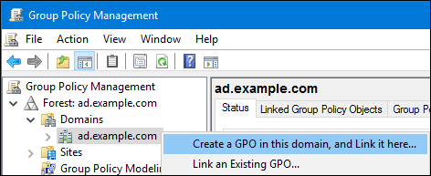-
Enter a name for the GPO, such as
Legacy Printer Driver Policyand clickOK. The new GPO will be displayed under the domain entry. -
Right-click to the newly-created GPO and select
Editto open theGroup Policy Management Editor. Navigate to → → → .
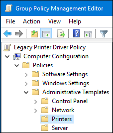On the right side of the window, double-click
Point and Print Restrictionto edit the policy:Enable the policy and set the following options:
-
Select
Users can only point and print to these serversand enter the fully-qualified domain name (FQDN) of the Samba print server to the field next to this option. In both check boxes under
Security Prompts, selectDo not show warning or elevation prompt.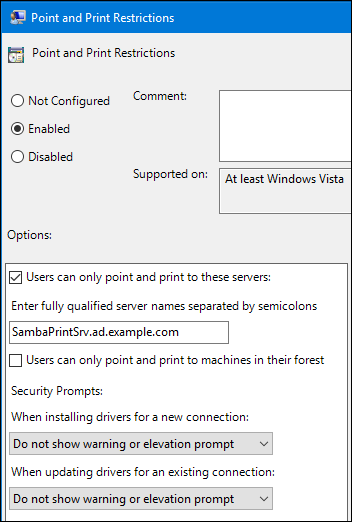
-
Select
- Click OK.
Double-click
Package Point and Print - Approved serversto edit the policy:-
Enable the policy and click the
Showbutton. Enter the FQDN of the Samba print server.
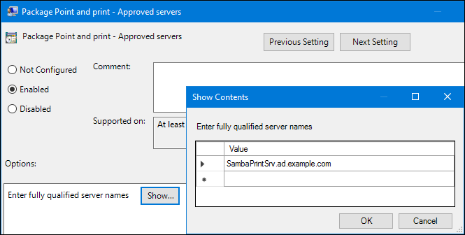-
Close both the
Show Contentsand the policy’s properties window by clickingOK.
-
Enable the policy and click the
-
Close the
Group Policy Management Editor. -
Close the
Group Policy Management Console.
After the Windows domain members applied the group policy, printer drivers are automatically downloaded from the Samba server when a user connects to a printer.
Additional resources
- For further details about using group policies, see the Windows documentation.
2.8.4.5. Uploading drivers and preconfiguring printers
Use the Print Management application on a Windows client to upload drivers and preconfigure printers hosted on the Samba print server. For further details, see the Windows documentation.
2.9. Tuning the performance of a Samba server
This chapter describes what settings can improve the performance of Samba in certain situations, and which settings can have a negative performance impact.
Parts of this section were adopted from the Performance Tuning documentation published in the Samba Wiki. License: CC BY 4.0. Authors and contributors: See the history tab on the Wiki page.
Prerequisites
- Samba is set up as a file or print server
2.9.1. Setting the SMB protocol version
Each new SMB version adds features and improves the performance of the protocol. The recent Windows and Windows Server operating systems always supports the latest protocol version. If Samba also uses the latest protocol version, Windows clients connecting to Samba benefit from the performance improvements. In Samba, the default value of the server max protocol is set to the latest supported stable SMB protocol version.
To always have the latest stable SMB protocol version enabled, do not set the server max protocol parameter. If you set the parameter manually, you will need to modify the setting with each new version of the SMB protocol, to have the latest protocol version enabled.
The following procedure explains how to use the default value in the server max protocol parameter.
Procedure
-
Remove the
server max protocolparameter from the[global]section in the/etc/samba/smb.conffile. Reload the Samba configuration
# smbcontrol all reload-config
2.9.3. Settings that can have a negative performance impact
By default, the kernel in Red Hat Enterprise Linux is tuned for high network performance. For example, the kernel uses an auto-tuning mechanism for buffer sizes. Setting the socket options parameter in the /etc/samba/smb.conf file overrides these kernel settings. As a result, setting this parameter decreases the Samba network performance in most cases.
To use the optimized settings from the Kernel, remove the socket options parameter from the [global] section in the /etc/samba/smb.conf.
2.10. Setting the minimum SMB protocol version supported by a Samba server
In Samba, the server min protocol parameter in the /etc/samba/smb.conf file defines the minimum server message block (SMB) protocol version the Samba server supports. This section describes how to change the minimum SMB protocol version.
By default, Samba on RHEL 8.2 and later supports only SMB2 and newer protocol versions. Red Hat recommends to not use the deprecated SMB1 protocol. However, if your environment requires SMB1, you can manually set the server min protocol parameter to NT1 to re-enable SMB1.
Prerequisites
- Samba is installed and configured.
Procedure
Edit the
/etc/samba/smb.conffile, add theserver min protocolparameter, and set the parameter to the minimum SMB protocol version the server should support. For example, to set the minimum SMB protocol version toSMB3, add:server min protocol = SMB3
Restart the
smbservice:# systemctl restart smb
Additional resources
-
For a list of protocol versions you can set in
server min protocolparameter, see the description of theserver max protocolparameter in thesmb.conf(5)man page.
2.11. Frequently used Samba command-line utilities
This chapter describes frequently used commands when working with a Samba server.
2.11.1. Using the net utility
The net utility enables you to perform several administration tasks on a Samba server. This section describes the most frequently used subcommands of the net utility.
Prerequisites
-
The
samba-common-toolspackage is installed.
2.11.1.1. Using the net ads join and net rpc join commands
Using the join subcommand of the net utility, you can join Samba to an AD or NT4 domain. To join the domain, you must create the /etc/samba/smb.conf file manually, and optionally update additional configurations, such as PAM.
Red Hat recommends using the realm utility to join a domain. The realm utility automatically updates all involved configuration files. For details, see Section 2.5.1, “Joining Samba to a Domain”.
Procedure
Manually create the
/etc/samba/smb.conffile with the following settings:For an AD domain member:
[global] workgroup = domain_name security = ads passdb backend = tdbsam realm = AD_REALM
For an NT4 domain member:
[global] workgroup = domain_name security = user passdb backend = tdbsam
-
Add an ID mapping configuration for the
*default domain and for the domain you want to join to the[global] section in the/etc/samba/smb.conffile. For details, see Section 2.5.4, “Samba ID mapping”. Verify the
/etc/samba/smb.conffile:# testparm
Join the domain as the domain administrator:
To join an AD domain:
# net ads join -U "DOMAIN\administrator"
To join an NT4 domain:
# net rpc join -U "DOMAIN\administrator"
Append the
winbindsource to thepasswdandgroupdatabase entry in the/etc/nsswitch.conffile:passwd: files
winbindgroup: fileswinbindEnable and start the
winbindservice:# systemctl enable winbind # systemctl start winbind
Optionally, configure PAM using the
authselectutility.For details, see the
authselect(8)man page.Optionally for AD environments, configure the Kerberos client.
For details, see the documentation of your Kerberos client.
Additional resources
2.11.1.2. Using the net rpc rights command
In Windows, you can assign privileges to accounts and groups to perform special operations, such as setting ACLs on a share or upload printer drivers. On a Samba server, you can use the net rpc rights command to manage privileges.
Listing privileges you can set
To list all available privileges and their owners, use the net rpc rights list command. For example:
net rpc rights list -U "DOMAIN\administrator" Enter DOMAIN\administrator's password: SeMachineAccountPrivilege Add machines to domain SeTakeOwnershipPrivilege Take ownership of files or other objects SeBackupPrivilege Back up files and directories SeRestorePrivilege Restore files and directories SeRemoteShutdownPrivilege Force shutdown from a remote system SePrintOperatorPrivilege Manage printers SeAddUsersPrivilege Add users and groups to the domain SeDiskOperatorPrivilege Manage disk shares SeSecurityPrivilege System security
Granting privileges
To grant a privilege to an account or group, use the net rpc rights grant command.
For example, grant the SePrintOperatorPrivilege privilege to the DOMAIN\printadmin group:
# net rpc rights grant "DOMAIN\printadmin" SePrintOperatorPrivilege \ -U "DOMAIN\administrator" Enter DOMAIN\administrator's password: Successfully granted rights.
Revoking privileges
To revoke a privilege from an account or group, use the net rpc rights revoke command.
For example, to revoke the SePrintOperatorPrivilege privilege from the DOMAIN\printadmin group:
# net rpc rights remoke "DOMAIN\printadmin" SePrintOperatorPrivilege \ -U "DOMAIN\administrator" Enter DOMAIN\administrator's password: Successfully revoked rights.
2.11.1.4. Using the net user command
The net user command enables you to perform the following actions on an AD DC or NT4 PDC:
- List all user accounts
- Add users
- Remove Users
Specifying a connection method, such as ads for AD domains or rpc for NT4 domains, is only required when you list domain user accounts. Other user-related subcommands can auto-detect the connection method.
Pass the -U user_name parameter to the command to specify a user that is allowed to perform the requested action.
Listing domain user accounts
To list all users in an AD domain:
# net ads user -U "DOMAIN\administrator"To list all users in an NT4 domain:
# net rpc user -U "DOMAIN\administrator"Adding a user account to the domain
On a Samba domain member, you can use the net user add command to add a user account to the domain.
For example, add the user account to the domain:
Add the account:
# net user add user password -U "DOMAIN\administrator" User user added
Optionally, use the remote procedure call (RPC) shell to enable the account on the AD DC or NT4 PDC. For example:
# net rpc shell -U DOMAIN\administrator -S DC_or_PDC_name Talking to domain DOMAIN (S-1-5-21-1424831554-512457234-5642315751) net rpc> user edit disabled user: no Set user's disabled flag from [yes] to [no] net rpc> exit
Deleting a user account from the domain
On a Samba domain member, you can use the net user delete command to remove a user account from the domain.
For example, to remove the user account from the domain:
# net user delete user -U "DOMAIN\administrator" User user deleted
2.11.2. Using the rpcclient utility
The rpcclient utility enables you to manually execute client-side Microsoft Remote Procedure Call (MS-RPC) functions on a local or remote SMB server. However, most of the features are integrated into separate utilities provided by Samba. Use rpcclient only for testing MS-PRC functions.
Prerequisites
-
The
samba-clientpackage is installed.
Examples
For example, you can use the rpcclient utility to:
Manage the printer Spool Subsystem (SPOOLSS).
Example 2.9. Assigning a Driver to a Printer
# rpcclient server_name -U "DOMAIN\administrator" \ -c 'setdriver "printer_name" "driver_name"' Enter DOMAIN\administrators password: Successfully set printer_name to driver driver_name.
Retrieve information about an SMB server.
Example 2.10. Listing all File Shares and Shared Printers
# rpcclient server_name -U "DOMAIN\administrator" -c 'netshareenum' Enter DOMAIN\administrators password: netname: Example_Share remark: path: C:\srv\samba\example_share\ password: netname: Example_Printer remark: path: C:\var\spool\samba\ password:
Perform actions using the Security Account Manager Remote (SAMR) protocol.
Example 2.11. Listing Users on an SMB Server
# rpcclient server_name -U "DOMAIN\administrator" -c 'enumdomusers' Enter DOMAIN\administrators password: user:[user1] rid:[0x3e8] user:[user2] rid:[0x3e9]
If you run the command against a standalone server or a domain member, it lists the users in the local database. Running the command against an AD DC or NT4 PDC lists the domain users.
Additional resources
For a complete list of supported subcommands, see the COMMANDS section in the rpcclient(1) man page.
2.11.3. Using the samba-regedit application
Certain settings, such as printer configurations, are stored in the registry on the Samba server. You can use the ncurses-based samba-regedit application to edit the registry of a Samba server.
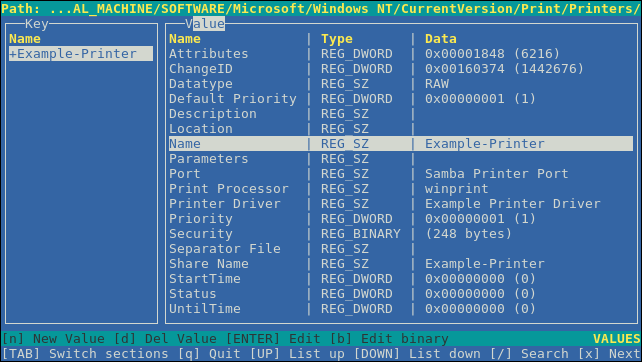
Prerequisites
-
The
samba-clientpackage is installed.
Procedure
To start the application, enter:
# samba-regedit
Use the following keys:
- Cursor up and cursor down: Navigate through the registry tree and the values.
- Enter: Opens a key or edits a value.
-
Tab: Switches between the
KeyandValuepane. - Ctrl+C: Closes the application.
2.11.4. Using the smbcacls utility
The smbcacls utility can list, set, and delete ACLs of files and directories stored on an SMB share. You can use smbcacls to manage file system ACLs:
- On a local or remote Samba server that uses advanced Windows ACLs or POSIX ACLs
- On Red Hat Enterprise Linux to remotely manage ACLs on a share hosted on Windows
2.11.4.1. Access control entries
Each ACL entry of a file system object contains Access Control Entries (ACE) in the following format:
security_principal:access_right/inheritance_information/permissions
Example 2.12. Access control entries
If the AD\Domain Users group has Modify permissions that apply to This folder, subfolders, and files on Windows, the ACL contains the following ACE:
AD\Domain Users:ALLOWED/OI|CI/CHANGE
An ACE contains the following parts:
- Security principal
- The security principal is the user, group, or SID the permissions in the ACL are applied to.
- Access right
-
Defines if access to an object is granted or denied. The value can be
ALLOWEDorDENIED. - Inheritance information
The following values exist:
Table 2.5. Inheritance settings
Value Description Maps to OIObject Inherit
This folder and files
CIContainer Inherit
This folder and subfolders
IOInherit Only
The ACE does not apply to the current file or directory
IDInherited
The ACE was inherited from the parent directory
Additionally, the values can be combined as follows:
Table 2.6. Inheritance settings combinations
Value combinations Maps to the Windows Applies tosettingOI|CIThis folder, subfolders, and files
OI|CI|IOSubfolders and files only
CI|IOSubfolders only
OI|IOFiles only
- Permissions
This value can be either a hex value that represents one or more Windows permissions or an
smbcaclsalias:A hex value that represents one or more Windows permissions.
The following table displays the advanced Windows permissions and their corresponding value in hex format:
Table 2.7. Windows permissions and their corresponding smbcacls value in hex format
Windows permissions Hex values Full control
0x001F01FFTraverse folder / execute file
0x00100020List folder / read data
0x00100001Read attributes
0x00100080Read extended attributes
0x00100008Create files / write data
0x00100002Create folders / append data
0x00100004Write attributes
0x00100100Write extended attributes
0x00100010Delete subfolders and files
0x00100040Delete
0x00110000Read permissions
0x00120000Change permissions
0x00140000Take ownership
0x00180000Multiple permissions can be combined as a single hex value using the bit-wise
ORoperation. For details, see Section 2.7.3.3, “ACE mask calculation”.An
smbcaclsalias. The following table displays the available aliases:Table 2.8. Existing smbcacls aliases and their corresponding Windows permission
smbcaclsaliasMaps to Windows permission RRead
READRead & execute
WSpecial:
- Create files / write data
- Create folders / append data
- Write attributes
- Write extended attributes
- Read permissions
DDelete
PChange permissions
OTake ownership
XTraverse / execute
CHANGEModify
FULLFull control
NoteYou can combine single-letter aliases when you set permissions. For example, you can set
RDto apply the Windows permissionReadandDelete. However, you can neither combine multiple non-single-letter aliases nor combine aliases and hex values.
2.11.4.2. Displaying ACLs using smbcacls
To display ACLs on an SMB share, use the smbcacls utility. If you run smbcacls without any operation parameter, such as --add, the utility displays the ACLs of a file system object.
Procedure
For example, to list the ACLs of the root directory of the //server/example share:
# smbcacls //server/example / -U "DOMAIN\administrator" Enter DOMAIN\administrator's password: REVISION:1 CONTROL:SR|PD|DI|DP OWNER:AD\Administrators GROUP:AD\Domain Users ACL:AD\Administrator:ALLOWED/OI|CI/FULL ACL:AD\Domain Users:ALLOWED/OI|CI/CHANGE ACL:AD\Domain Guests:ALLOWED/OI|CI/0x00100021
The output of the command displays:
-
REVISION: The internal Windows NT ACL revision of the security descriptor -
CONTROL: Security descriptor control -
OWNER: Name or SID of the security descriptor’s owner -
GROUP: Name or SID of the security descriptor’s group -
ACLentries. For details, see Section 2.7.3.1, “Access control entries”.
2.11.4.3. ACE mask calculation
In most situations, when you add or update an ACE, you use the smbcacls aliases listed in Table 2.4, “Existing smbcacls aliases and their corresponding Windows permission”.
However, if you want to set advanced Windows permissions as listed in Table 2.3, “Windows permissions and their corresponding smbcacls value in hex format”, you must use the bit-wise OR operation to calculate the correct value. You can use the following shell command to calculate the value:
# echo $(printf '0x%X' $(( hex_value_1 | hex_value_2 | ... )))
Example 2.13. Calculating an ACE Mask
You want to set the following permissions:
- Traverse folder / execute file (0x00100020)
- List folder / read data (0x00100001)
- Read attributes (0x00100080)
To calculate the hex value for the previous permissions, enter:
# echo $(printf '0x%X' $(( 0x00100020 | 0x00100001 | 0x00100080 )))
0x1000A1Use the returned value when you set or update an ACE.
2.11.4.4. Adding, updating, and removing an ACL using smbcacls
Depending on the parameter you pass to the smbcacls utility, you can add, update, and remove ACLs from a file or directory.
Adding an ACL
To add an ACL to the root of the //server/example share that grants CHANGE permissions for This folder, subfolders, and files to the AD\Domain Users group:
# smbcacls //server/example / -U "DOMAIN\administrator \
--add ACL:"AD\Domain Users":ALLOWED/OI|CI/CHANGEUpdating an ACL
Updating an ACL is similar to adding a new ACL. You update an ACL by overriding the ACL using the --modify parameter with an existing security principal. If smbcacls finds the security principal in the ACL list, the utility updates the permissions. Otherwise the command fails with an error:
ACL for SID principal_name not found
For example, to update the permissions of the AD\Domain Users group and set them to READ for This folder, subfolders, and files:
# smbcacls //server/example / -U "DOMAIN\administrator \
--modify ACL:"AD\Domain Users":ALLOWED/OI|CI/READDeleting an ACL
To delete an ACL, pass the --delete parameter with the exact ACL to the smbcacls utility. For example:
# smbcacls //server/example / -U "DOMAIN\administrator \
--delete ACL:"AD\Domain Users":ALLOWED/OI|CI/READ2.11.5. Using the smbclient utility
The smbclient utility enables you to access file shares on an SMB server, similarly to a command-line FTP client. You can use it, for example, to upload and download files to and from a share.
Prerequisites
-
The
samba-clientpackage is installed.
2.11.5.1. How the smbclient interactive mode works
For example, to authenticate to the example share hosted on server using the DOMAIN\user account:
# smbclient -U "DOMAIN\user" //server/example Enter domain\user's password: Try "help" to get a list of possible commands. smb: \>
After smbclient connected successfully to the share, the utility enters the interactive mode and shows the following prompt:
smb: \>
To display all available commands in the interactive shell, enter:
smb: \> help
To display the help for a specific command, enter:
smb: \> help command_nameAdditional resources
-
For further details and descriptions of the commands available in the interactive shell, see the
smbclient(1)man page.
2.11.5.2. Using smbclient in interactive mode
If you use smbclient without the -c parameter, the utility enters the interactive mode. The following procedure shows how to connect to an SMB share and download a file from a subdirectory.
Procedure
Connect to the share:
# smbclient -U "DOMAIN\user_name" //server_name/share_name
Change into the
/example/directory:smb: \> cd /example/
List the files in the directory:
smb: \example\> ls . D 0 Thu Nov 1 10:00:00 2018 .. D 0 Thu Nov 1 10:00:00 2018 example.txt N 1048576 Thu Nov 1 10:00:00 2018 9950208 blocks of size 1024. 8247144 blocks availableDownload the
example.txtfile:smb: \example\> get example.txt getting file \directory\subdirectory\example.txt of size 1048576 as example.txt (511975,0 KiloBytes/sec) (average 170666,7 KiloBytes/sec)
Disconnect from the share:
smb: \example\> exit
2.11.5.3. Using smbclient in scripting mode
If you pass the -c parameter to smbclient, you can automatically execute the commands on the remote SMB share. This enables you to use smbclient in scripts.
The following procedure shows how to connect to an SMB share and download a file from a subdirectory.
Procedure
# smbclient -U DOMAIN\user_name //server_name/share_name \ -c "cd /example/ ; get example.txt ; exit"
2.11.6. Using the smbcontrol utility
The smbcontrol utility enables you to send command messages to the smbd, nmbd, winbindd, or all of these services. These control messages instruct the service, for example, to reload its configuration.
The procedure in this section shows how to to reload the configuration of the smbd, nmbd, winbindd services by sending the reload-config message type to the all destination.
Prerequisites
-
The
samba-common-toolspackage is installed.
Procedure
# smbcontrol all reload-config
Additional resources
For further details and a list of available command message types, see the smbcontrol(1) man page.
2.11.7. Using the smbpasswd utility
The smbpasswd utility manages user accounts and passwords in the local Samba database.
Prerequisites
-
The
samba-common-toolspackage is installed.
Procedure
If you run the command as a user,
smbpasswdchanges the Samba password of the user who run the command. For example:[user@server ~]$ smbpasswd New SMB password: password Retype new SMB password: password
If you run
smbpasswdas therootuser, you can use the utility, for example, to:Create a new user:
[root@server ~]# smbpasswd -a user_name New SMB password: password Retype new SMB password: password Added user user_name.
NoteBefore you can add a user to the Samba database, you must create the account in the local operating system. See the Adding a new user section in the Configuring and managing system administration guide.
Enable a Samba user:
[root@server ~]# smbpasswd -e user_name Enabled user user_name.
Disable a Samba user:
[root@server ~]# smbpasswd -x user_name Disabled user ser_name
Delete a user:
[root@server ~]# smbpasswd -x user_name Deleted user user_name.
Additional resources
For further details, see the smbpasswd(8) man page.
2.11.8. Using the smbstatus utility
The smbstatus utility reports on:
-
Connections per PID of each
smbddaemon to the Samba server. This report includes the user name, primary group, SMB protocol version, encryption, and signing information. -
Connections per Samba share. This report includes the PID of the
smbddaemon, the IP of the connecting machine, the time stamp when the connection was established, encryption, and signing information. - A list of locked files. The report entries include further details, such as opportunistic lock (oplock) types
Prerequisites
-
The
sambapackage is installed. -
The
smbdservice is running.
Procedure
# smbstatus Samba version 4.7.1 PID Username Group Machine Protocol Version Encryption Signing ----------------------------------------------------------------------------------------------------------------------------- 963 DOMAIN\administrator DOMAIN\domain users client-pc (ipv4:192.0.2.1:57786) SMB3_02 - AES-128-CMAC Service pid Machine Connected at Encryption Signing: ------------------------------------------------------------------------------- example 969 192.0.2.1 Thu Nov 1 10:00:00 2018 CEST - AES-128-CMAC Locked files: Pid Uid DenyMode Access R/W Oplock SharePath Name Time ------------------------------------------------------------------------------------------------------------ 969 10000 DENY_WRITE 0x120089 RDONLY LEASE(RWH) /srv/samba/example file.txt Thu Nov 1 10:00:00 2018
Additional resources
For further details, see the smbstatus(1) man page.
2.11.9. Using the smbtar utility
The smbtar utility backs up the content of an SMB share or a subdirectory of it and stores the content in a tar archive. Alternatively, you can write the content to a tape device.
The procedure in this section describes how to back up the content of the demo directory on the //server/example/ share and store the content in the /root/example.tar archive.
Prerequisites
-
The
samba-clientpackage is installed.
Procedure
# smbtar -s server -x example -u user_name -p password -t /root/example.tar
Additional resources
For further details, see the smbtar(1) man page.
2.11.10. Using the testparm utility
The testparm utility verifies that the Samba configuration in the /etc/samba/smb.conf file is correct. The utility detects invalid parameters and values, but also incorrect settings, such as for ID mapping. If testparm reports no problem, the Samba services will successfully load the /etc/samba/smb.conf file. Note that testparm cannot verify that the configured services will be available or work as expected.
Red Hat recommends that you verify the /etc/samba/smb.conf file by using testparm after each modification of this file.
Procedure
Run the
testparmutility as therootuser:# testparm Load smb config files from /etc/samba/smb.conf rlimit_max: increasing rlimit_max (1024) to minimum Windows limit (16384) Unknown parameter encountered: "log levell" Processing section "[example_share]" Loaded services file OK. ERROR: The idmap range for the domain * (tdb) overlaps with the range of DOMAIN (ad)! Server role: ROLE_DOMAIN_MEMBER Press enter to see a dump of your service definitions # Global parameters [global] ... [example_share] ...
The previous example output reports a non-existent parameter and an incorrect ID mapping configuration.
-
If
testparmreports incorrect parameters, values, or other errors in the configuration, fix the problem and run the utility again.
2.11.11. Using the wbinfo utility
The wbinfo utility queries and returns information created and used by the winbindd service.
Prerequisites
-
The
samba-winbind-clientspackage is installed.
Procedure
You can use wbinfo, for example, to:
List domain users:
# wbinfo -u AD\administrator AD\guest ...
List domain groups:
# wbinfo -g AD\domain computers AD\domain admins AD\domain users ...
Display the SID of a user:
# wbinfo --name-to-sid="AD\administrator" S-1-5-21-1762709870-351891212-3141221786-500 SID_USER (1)Display information about domains and trusts:
# wbinfo --trusted-domains --verbose Domain Name DNS Domain Trust Type Transitive In Out BUILTIN None Yes Yes Yes server None Yes Yes Yes DOMAIN1 domain1.example.com None Yes Yes Yes DOMAIN2 domain2.example.com External No Yes Yes
Additional resources
For further details, see the wbinfo(1) man page.
Chapter 4. Securing NFS
To minimize NFS security risks and protect data on the server, consider the following sections when exporting NFS file systems on a server or mounting them on a client.
4.1. NFS security with AUTH_SYS and export controls
NFS provides the following traditional options in order to control access to exported files:
- The server restricts which hosts are allowed to mount which file systems either by IP address or by host name.
-
The server enforces file system permissions for users on NFS clients in the same way it does for local users. Traditionally, NFS does this using the
AUTH_SYScall message (also calledAUTH_UNIX), which relies on the client to state the UID and GIDs of the user. Be aware that this means that a malicious or misconfigured client might easily get this wrong and allow a user access to files that it should not.
To limit the potential risks, administrators often limits the access to read-only or squash user permissions to a common user and group ID. Unfortunately, these solutions prevent the NFS share from being used in the way it was originally intended.
Additionally, if an attacker gains control of the DNS server used by the system exporting the NFS file system, they can point the system associated with a particular hostname or fully qualified domain name to an unauthorized machine. At this point, the unauthorized machine is the system permitted to mount the NFS share, because no username or password information is exchanged to provide additional security for the NFS mount.
Wildcards should be used sparingly when exporting directories through NFS, as it is possible for the scope of the wildcard to encompass more systems than intended.
Additional resources
-
For more information on securing NFS and
rpcbind, see theiptablesman page.
4.2. NFS security with AUTH_GSS
All version of NFS support RPCSEC_GSS and the Kerberos mechanism.
Unlike AUTH_SYS, with the RPCSEC_GSS Kerberos mechanism, the server does not depend on the client to correctly represent which user is accessing the file. Instead, cryptography is used to authenticate users to the server, which prevents a malicious client from impersonating a user without having that user’s Kerberos credentials. Using the RPCSEC_GSS Kerberos mechanism is the most straightforward way to secure mounts because after configuring Kerberos, no additional setup is needed.
4.3. Configuring an NFS server and client to use Kerberos
Kerberos is a network authentication system that allows clients and servers to authenticate to each other by using symmetric encryption and a trusted third party, the KDC. Red Hat recommends using Identity Management (IdM) for setting up Kerberos.
Prerequisites
-
The Kerberos Key Distribution Centre (
KDC) is installed and configured.
Procedure
-
Create the
nfs/hostname.domain@REALMprincipal on the NFS server side. -
Create the
host/hostname.domain@REALMprincipal on both the server and the client side. - Add the corresponding keys to keytabs for the client and server.
-
Create the
On the server side, use the
sec=option to enable the wanted security flavors. To enable all security flavors as well as non-cryptographic mounts:/export *(sec=sys:krb5:krb5i:krb5p)
Valid security flavors to use with the
sec=option are:-
sys: no cryptographic protection, the default -
krb5: authentication only -
krb5i: integrity protection -
krb5p: privacy protection
-
On the client side, add
sec=krb5(orsec=krb5i, orsec=krb5p, depending on the setup) to the mount options:# mount -o sec=krb5 server:/export /mnt
Additional resources
- If you need to write files as root on the Kerberos-secured NFS share and keep root ownership on these files, see https://access.redhat.com/articles/4040141. Note that this configuration is not recommended.
- For more information on NFS configuration, see the exports(5) and nfs(5) man pages.
4.4. NFSv4 security options
NFSv4 includes ACL support based on the Microsoft Windows NT model, not the POSIX model, because of the Microsoft Windows NT model’s features and wide deployment.
Another important security feature of NFSv4 is the removal of the use of the MOUNT protocol for mounting file systems. The MOUNT protocol presented a security risk because of the way the protocol processed file handles.
4.5. File permissions on mounted NFS exports
Once the NFS file system is mounted as either read or read and write by a remote host, the only protection each shared file has is its permissions. If two users that share the same user ID value mount the same NFS file system on different client systems, they can modify each others' files. Additionally, anyone logged in as root on the client system can use the su - command to access any files with the NFS share.
By default, access control lists (ACLs) are supported by NFS under Red Hat Enterprise Linux. Red Hat recommends to keep this feature enabled.
By default, NFS uses root squashing when exporting a file system. This sets the user ID of anyone accessing the NFS share as the root user on their local machine to nobody. Root squashing is controlled by the default option root_squash; for more information about this option, see Section 3.6, “NFS server configuration”.
When exporting an NFS share as read-only, consider using the all_squash option. This option makes every user accessing the exported file system take the user ID of the nfsnobody user.
Chapter 5. Enabling pNFS SCSI layouts in NFS
You can configure the NFS server and client to use the pNFS SCSI layout for accessing data. pNFS SCSI is beneficial in use cases that involve longer-duration single-client access to a file.
Prerequisites
- Both the client and the server must be able to send SCSI commands to the same block device. That is, the block device must be on a shared SCSI bus.
- The block device must contain an XFS file system.
- The SCSI device must support SCSI Persistent Reservations as described in the SCSI-3 Primary Commands specification.
5.1. The pNFS technology
The pNFS architecture improves the scalability of NFS. When a server implements pNFS, the client is able to access data through multiple servers concurrently. This can lead to performance improvements.
pNFS supports the following storage protocols or layouts on RHEL:
- Files
- Flexfiles
- SCSI
5.2. pNFS SCSI layouts
The SCSI layout builds on the work of pNFS block layouts. The layout is defined across SCSI devices. It contains a sequential series of fixed-size blocks as logical units (LUs) that must be capable of supporting SCSI persistent reservations. The LU devices are identified by their SCSI device identification.
pNFS SCSI performs well in use cases that involve longer-duration single-client access to a file. An example might be a mail server or a virtual machine housing a cluster.
Operations between the client and the server
When an NFS client reads from a file or writes to it, the client performs a LAYOUTGET operation. The server responds with the location of the file on the SCSI device. The client might need to perform an additional operation of GETDEVICEINFO to determine which SCSI device to use. If these operations work correctly, the client can issue I/O requests directly to the SCSI device instead of sending READ and WRITE operations to the server.
Errors or contention between clients might cause the server to recall layouts or not issue them to the clients. In those cases, the clients fall back to issuing READ and WRITE operations to the server instead of sending I/O requests directly to the SCSI device.
To monitor the operations, see Section 5.7, “Monitoring pNFS SCSI layouts functionality”.
Device reservations
pNFS SCSI handles fencing through the assignment of reservations. Before the server issues layouts to clients, it reserves the SCSI device to ensure that only registered clients may access the device. If a client can issue commands to that SCSI device but is not registered with the device, many operations from the client on that device fail. For example, the blkid command on the client fails to show the UUID of the XFS file system if the server has not given a layout for that device to the client.
The server does not remove its own persistent reservation. This protects the data within the file system on the device across restarts of clients and servers. In order to repurpose the SCSI device, you might need to manually remove the persistent reservation on the NFS server.
5.3. Checking for a SCSI device compatible with pNFS
This procedure checks if a SCSI device supports the pNFS SCSI layout.
Prerequisites
Install the
sg3_utilspackage:# yum install sg3_utils
Procedure
On both the server and client, check for the proper SCSI device support:
# sg_persist --in --report-capabilities --verbose path-to-scsi-deviceEnsure that the Persist Through Power Loss Active (
PTPL_A) bit is set.Example 5.1. A SCSI device that supports pNFS SCSI
The following is an example of
sg_persistoutput for a SCSI device that supports pNFS SCSI. ThePTPL_Abit reports1.inquiry cdb: 12 00 00 00 24 00 Persistent Reservation In cmd: 5e 02 00 00 00 00 00 20 00 00 LIO-ORG block11 4.0 Peripheral device type: disk Report capabilities response: Compatible Reservation Handling(CRH): 1 Specify Initiator Ports Capable(SIP_C): 1 All Target Ports Capable(ATP_C): 1 Persist Through Power Loss Capable(PTPL_C): 1 Type Mask Valid(TMV): 1 Allow Commands: 1 Persist Through Power Loss Active(PTPL_A): 1 Support indicated in Type mask: Write Exclusive, all registrants: 1 Exclusive Access, registrants only: 1 Write Exclusive, registrants only: 1 Exclusive Access: 1 Write Exclusive: 1 Exclusive Access, all registrants: 1
Additional resources
-
The
sg_persist(8)man page
5.4. Setting up pNFS SCSI on the server
This procedure configures an NFS server to export a pNFS SCSI layout.
Procedure
- On the server, mount the XFS file system created on the SCSI device.
Configure the NFS server to export NFS version 4.1 or higher. Set the following option in the
[nfsd]section of the/etc/nfs.conffile:[nfsd] vers4.1=y
Configure the NFS server to export the XFS file system over NFS with the
pnfsoption:Example 5.2. An entry in /etc/exports to export pNFS SCSI
The following entry in the
/etc/exportsconfiguration file exports the file system mounted at/exported/directory/to theallowed.example.comclient as a pNFS SCSI layout:/exported/directory allowed.example.com(pnfs)
Additional resources
- For more information on configuring an NFS server, see Chapter 3, Exporting NFS shares.
5.5. Setting up pNFS SCSI on the client
This procedure configures an NFS client to mount a pNFS SCSI layout.
Prerequisites
- The NFS server is configured to export an XFS file system over pNFS SCSI. See Section 5.4, “Setting up pNFS SCSI on the server”.
Procedure
On the client, mount the exported XFS file system using NFS version 4.1 or higher:
# mount -t nfs -o nfsvers=4.1 host:/remote/export /local/directory
Do not mount the XFS file system directly without NFS.
Additional resources
- For more information on mounting NFS shares, see Mounting NFS shares.
5.6. Releasing the pNFS SCSI reservation on the server
This procedure releases the persistent reservation that an NFS server holds on a SCSI device. This enables you to repurpose the SCSI device when you no longer need to export pNFS SCSI.
You must remove the reservation from the server. It cannot be removed from a different IT Nexus.
Prerequisites
Install the
sg3_utilspackage:# yum install sg3_utils
Procedure
Query an existing reservation on the server:
# sg_persist --read-reservation path-to-scsi-deviceExample 5.3. Querying a reservation on /dev/sda
# sg_persist --read-reservation /dev/sda LIO-ORG block_1 4.0 Peripheral device type: disk PR generation=0x8, Reservation follows: Key=0x100000000000000 scope: LU_SCOPE, type: Exclusive Access, registrants onlyRemove the existing registration on the server:
# sg_persist --out \ --release \ --param-rk=reservation-key \ --prout-type=6 \ path-to-scsi-deviceExample 5.4. Removing a reservation on /dev/sda
# sg_persist --out \ --release \ --param-rk=0x100000000000000 \ --prout-type=6 \ /dev/sda LIO-ORG block_1 4.0 Peripheral device type: disk
Additional resources
-
The
sg_persist(8)man page
5.7. Monitoring pNFS SCSI layouts functionality
You can monitor if the pNFS client and server exchange proper pNFS SCSI operations or if they fall back on regular NFS operations.
Prerequisites
- A pNFS SCSI client and server are configured.
5.7.1. Checking pNFS SCSI operations from the server using nfsstat
This procedure uses the nfsstat utility to monitor pNFS SCSI operations from the server.
Procedure
Monitor the operations serviced from the server:
# watch --differences \ "nfsstat --server | egrep --after-context=1 read\|write\|layout" Every 2.0s: nfsstat --server | egrep --after-context=1 read\|write\|layout putrootfh read readdir readlink remove rename 2 0% 0 0% 1 0% 0 0% 0 0% 0 0% -- setcltidconf verify write rellockowner bc_ctl bind_conn 0 0% 0 0% 0 0% 0 0% 0 0% 0 0% -- getdevlist layoutcommit layoutget layoutreturn secinfononam sequence 0 0% 29 1% 49 1% 5 0% 0 0% 2435 86%The client and server use pNFS SCSI operations when:
-
The
layoutget,layoutreturn, andlayoutcommitcounters increment. This means that the server is serving layouts. -
The server
readandwritecounters do not increment. This means that the clients are performing I/O requests directly to the SCSI devices.
-
The
5.7.2. Checking pNFS SCSI operations from the client using mountstats
This procedure uses the /proc/self/mountstats file to monitor pNFS SCSI operations from the client.
Procedure
List the per-mount operation counters:
# cat /proc/self/mountstats \ | awk /scsi_lun_0/,/^$/ \ | egrep device\|READ\|WRITE\|LAYOUT device 192.168.122.73:/exports/scsi_lun_0 mounted on /mnt/rhel7/scsi_lun_0 with fstype nfs4 statvers=1.1 nfsv4: bm0=0xfdffbfff,bm1=0x40f9be3e,bm2=0x803,acl=0x3,sessions,pnfs=LAYOUT_SCSI READ: 0 0 0 0 0 0 0 0 WRITE: 0 0 0 0 0 0 0 0 READLINK: 0 0 0 0 0 0 0 0 READDIR: 0 0 0 0 0 0 0 0 LAYOUTGET: 49 49 0 11172 9604 2 19448 19454 LAYOUTCOMMIT: 28 28 0 7776 4808 0 24719 24722 LAYOUTRETURN: 0 0 0 0 0 0 0 0 LAYOUTSTATS: 0 0 0 0 0 0 0 0In the results:
-
The
LAYOUTstatistics indicate requests where the client and server use pNFS SCSI operations. -
The
READandWRITEstatistics indicate requests where the client and server fall back to NFS operations.
-
The
Chapter 6. Configuring the Squid caching proxy server
Squid is a proxy server that caches content to reduce bandwidth and load web pages more quickly. This chapter describes how to set up Squid as a proxy for the HTTP, HTTPS, and FTP protocol, as well as authentication and restricting access.
6.1. Setting up Squid as a caching proxy without authentication
This section describes a basic configuration of Squid as a caching proxy without authentication. The procedure limits access to the proxy based on IP ranges.
Prerequisites
-
The procedure assumes that the
/etc/squid/squid.conffile is as provided by thesquidpackage. If you edited this file before, remove the file and reinstall the package.
Procedure
Install the
squidpackage:# yum install squid
Edit the
/etc/squid/squid.conffile:Adapt the
localnetaccess control lists (ACL) to match the IP ranges that should be allowed to use the proxy:acl localnet src 192.0.2.0/24 acl localnet 2001:db8::/32
By default, the
/etc/squid/squid.conffile contains thehttp_access allow localnetrule that allows using the proxy from all IP ranges specified inlocalnetACLs. Note that you must specify alllocalnetACLs before thehttp_access allow localnetrule.ImportantRemove all existing
acl localnetentries that do not match your environment.The following ACL exists in the default configuration and defines
443as a port that uses the HTTPS protocol:acl SSL_ports port 443
If users should be able to use the HTTPS protocol also on other ports, add an ACL for each of these port:
acl SSL_ports port port_numberUpdate the list of
acl Safe_portsrules to configure to which ports Squid can establish a connection. For example, to configure that clients using the proxy can only access resources on port 21 (FTP), 80 (HTTP), and 443 (HTTPS), keep only the followingacl Safe_portsstatements in the configuration:acl Safe_ports port 21 acl Safe_ports port 80 acl Safe_ports port 443
By default, the configuration contains the
http_access deny !Safe_portsrule that defines access denial to ports that are not defined inSafe_portsACLs.Configure the cache type, the path to the cache directory, the cache size, and further cache type-specific settings in the
cache_dirparameter:cache_dir ufs /var/spool/squid 10000 16 256
With these settings:
-
Squid uses the
ufscache type. -
Squid stores its cache in the
/var/spool/squid/directory. -
The cache grows up to
10000MB. -
Squid creates
16level-1 sub-directories in the/var/spool/squid/directory. Squid creates
256sub-directories in each level-1 directory.If you do not set a
cache_dirdirective, Squid stores the cache in memory.
-
Squid uses the
If you set a different cache directory than
/var/spool/squid/in thecache_dirparameter:Create the cache directory:
# mkdir -p path_to_cache_directoryConfigure the permissions for the cache directory:
# chown squid:squid path_to_cache_directoryIf you run SELinux in
enforcingmode, set thesquid_cache_tcontext for the cache directory:# semanage fcontext -a -t squid_cache_t "path_to_cache_directory(/.*)?" # restorecon -Rv path_to_cache_directory
If the
semanageutility is not available on your system, install thepolicycoreutils-python-utilspackage.
Open the
3128port in the firewall:# firewall-cmd --permanent --add-port=3128/tcp # firewall-cmd --reload
Enable and start the
squidservice:# systemctl enable --now squid
Verification steps
To verify that the proxy works correctly, download a web page using the curl utility:
# curl -O -L "https://www.redhat.com/index.html" -x "proxy.example.com:3128"
If curl does not display any error and the index.html file was downloaded to the current directory, the proxy works.
6.2. Setting up Squid as a caching proxy with LDAP authentication
This section describes a basic configuration of Squid as a caching proxy that uses LDAP to authenticate users. The procedure configures that only authenticated users can use the proxy.
Prerequisites
-
The procedure assumes that the
/etc/squid/squid.conffile is as provided by thesquidpackage. If you edited this file before, remove the file and reinstall the package. -
An service user, such as
uid=proxy_user,cn=users,cn=accounts,dc=example,dc=comexists in the LDAP directory. Squid uses this account only to search for the authenticating user. If the authenticating user exists, Squid binds as this user to the directory to verify the authentication.
Procedure
Install the
squidpackage:# yum install squid
Edit the
/etc/squid/squid.conffile:To configure the
basic_ldap_authhelper utility, add the following configuration entry to the top of/etc/squid/squid.conf:auth_param basic program /usr/lib64/squid/basic_ldap_auth -b "cn=users,cn=accounts,dc=example,dc=com" -D "uid=proxy_user,cn=users,cn=accounts,dc=example,dc=com" -W /etc/squid/ldap_password -f "(&(objectClass=person)(uid=%s))" -ZZ -H ldap://ldap_server.example.com:389
The following describes the parameters passed to the
basic_ldap_authhelper utility in the example above:-
-B base_DNsets the LDAP search base. -
-D proxy_service_user_DNsets the distinguished name (DN) of the account Squid uses to search for the authenticating user in the directory. -
-W path_to_password_filesets the path to the file that contains the password of the proxy service user. Using a password file prevents that the password is visible in the operating system’s process list. -f LDAP_filterspecifies the LDAP search filter. Squid replaces the%svariable with the user name provided by the authenticating user.The
(&(objectClass=person)(uid=%s))filter in the example defines that the user name must match the value set in theuidattribute and that the directory entry contains thepersonobject class.-ZZenforces a TLS-encrypted connection over the LDAP protocol using theSTARTTLScommand. Omit the-ZZin the following situations:- The LDAP server does not support encrypted connections.
- The port specified in the URL uses the LDAPS protocol.
- The -H LDAP_URL parameter specifies the protocol, the host name or IP address, and the port of the LDAP server in URL format.
-
Add the following ACL and rule to configure that Squid allows only authenticated users to use the proxy:
acl ldap-auth proxy_auth REQUIRED http_access allow ldap-auth
ImportantSpecify these settings before the
http_access denyall rule.Remove the following rule to disable bypassing the proxy authentication from IP ranges specified in
localnetACLs:http_access allow localnet
The following ACL exists in the default configuration and defines
443as a port that uses the HTTPS protocol:acl SSL_ports port 443
If users should be able to use the HTTPS protocol also on other ports, add an ACL for each of these port:
acl SSL_ports port port_number
Update the list of
acl Safe_portsrules to configure to which ports Squid can establish a connection. For example, to configure that clients using the proxy can only access resources on port 21 (FTP), 80 (HTTP), and 443 (HTTPS), keep only the followingacl Safe_portsstatements in the configuration:acl Safe_ports port 21 acl Safe_ports port 80 acl Safe_ports port 443
By default, the configuration contains the
http_access deny !Safe_portsrule that defines access denial to ports that are not defined inSafe_ports ACLs.Configure the cache type, the path to the cache directory, the cache size, and further cache type-specific settings in the
cache_dirparameter:cache_dir ufs /var/spool/squid 10000 16 256
With these settings:
-
Squid uses the
ufscache type. -
Squid stores its cache in the
/var/spool/squid/directory. -
The cache grows up to
10000MB. -
Squid creates
16level-1 sub-directories in the/var/spool/squid/directory. Squid creates
256sub-directories in each level-1 directory.If you do not set a
cache_dirdirective, Squid stores the cache in memory.
-
Squid uses the
If you set a different cache directory than
/var/spool/squid/in thecache_dirparameter:Create the cache directory:
# mkdir -p path_to_cache_directoryConfigure the permissions for the cache directory:
# chown squid:squid path_to_cache_directoryIf you run SELinux in
enforcingmode, set thesquid_cache_tcontext for the cache directory:# semanage fcontext -a -t squid_cache_t "path_to_cache_directory(/.*)?" # restorecon -Rv path_to_cache_directory
If the
semanageutility is not available on your system, install thepolicycoreutils-python-utilspackage.
Store the password of the LDAP service user in the
/etc/squid/ldap_passwordfile, and set appropriate permissions for the file:# echo "password" > /etc/squid/ldap_password # chown root:squid /etc/squid/ldap_password # chmod 640 /etc/squid/ldap_passwordOpen the
3128port in the firewall:# firewall-cmd --permanent --add-port=3128/tcp # firewall-cmd --reload
Enable and start the
squidservice:# systemctl enable --now squid
Verification steps
To verify that the proxy works correctly, download a web page using the curl utility:
# curl -O -L "https://www.redhat.com/index.html" -x "user_name:password@proxy.example.com:3128"
If curl does not display any error and the index.html file was downloaded to the current directory, the proxy works.
Troubleshooting steps
To verify that the helper utility works correctly:
Manually start the helper utility with the same settings you used in the
auth_paramparameter:# /usr/lib64/squid/basic_ldap_auth -b "cn=users,cn=accounts,dc=example,dc=com" -D "uid=proxy_user,cn=users,cn=accounts,dc=example,dc=com" -W /etc/squid/ldap_password -f "(&(objectClass=person)(uid=%s))" -ZZ -H ldap://ldap_server.example.com:389
Enter a valid user name and password, and press Enter:
user_name password
If the helper utility returns
OK, authentication succeeded.
6.3. Setting up Squid as a caching proxy with kerberos authentication
This section describes a basic configuration of Squid as a caching proxy that authenticates users to an Active Directory (AD) using Kerberos. The procedure configures that only authenticated users can use the proxy.
Prerequisites
-
The procedure assumes that the
/etc/squid/squid.conffile is as provided by thesquidpackage. If you edited this file before, remove the file and reinstall the package. -
The server on which you want to install Squid is a member of the AD domain. For details, see Setting up Samba as a Domain Member in the Red Hat Enterprise Linux 8
Deploying different types of serversdocumentation.
Procedure
Install the following packages:
yum install squid krb5-workstation
Authenticate as the AD domain administrator:
# kinit administrator@AD.EXAMPLE.COMCreate a keytab for Squid and store it in the
/etc/squid/HTTP.keytabfile:# export KRB5_KTNAME=FILE:/etc/squid/HTTP.keytab # net ads keytab CREATE -U administrator
Add the
HTTPservice principal to the keytab:# net ads keytab ADD HTTP -U administrator
Set the owner of the keytab file to the
squiduser:# chown squid /etc/squid/HTTP.keytab
Optionally, verify that the keytab file contains the
HTTPservice principal for the fully-qualified domain name (FQDN) of the proxy server:# klist -k /etc/squid/HTTP.keytab Keytab name: FILE:/etc/squid/HTTP.keytab KVNO Principal ---- --------------------------------------------------- ... 2 HTTP/proxy.ad.example.com@AD.EXAMPLE.COM ...
Edit the
/etc/squid/squid.conffile:To configure the
negotiate_kerberos_authhelper utility, add the following configuration entry to the top of/etc/squid/squid.conf:auth_param negotiate program /usr/lib64/squid/negotiate_kerberos_auth -k /etc/squid/HTTP.keytab -s HTTP/proxy.ad.example.com@AD.EXAMPLE.COM
The following describes the parameters passed to the
negotiate_kerberos_authhelper utility in the example above:-
-k filesets the path to the key tab file. Note that the squid user must have read permissions on this file. -s HTTP/host_name@kerberos_realmsets the Kerberos principal that Squid uses.Optionally, you can enable logging by passing one or both of the following parameters to the helper utility:
-
-ilogs informational messages, such as the authenticating user. -denables debug logging.Squid logs the debugging information from the helper utility to the
/var/log/squid/cache.logfile.
-
Add the following ACL and rule to configure that Squid allows only authenticated users to use the proxy:
acl kerb-auth proxy_auth REQUIRED http_access allow kerb-auth
ImportantSpecify these settings before the
http_access deny allrule.Remove the following rule to disable bypassing the proxy authentication from IP ranges specified in
localnetACLs:http_access allow localnet
The following ACL exists in the default configuration and defines
443as a port that uses the HTTPS protocol:acl SSL_ports port 443
If users should be able to use the HTTPS protocol also on other ports, add an ACL for each of these port:
acl SSL_ports port port_numberUpdate the list of
acl Safe_portsrules to configure to which ports Squid can establish a connection. For example, to configure that clients using the proxy can only access resources on port 21 (FTP), 80 (HTTP), and 443 (HTTPS), keep only the followingacl Safe_portsstatements in the configuration:acl Safe_ports port 21 acl Safe_ports port 80 acl Safe_ports port 443
By default, the configuration contains the
http_access deny !Safe_portsrule that defines access denial to ports that are not defined inSafe_portsACLs.Configure the cache type, the path to the cache directory, the cache size, and further cache type-specific settings in the
cache_dirparameter:cache_dir ufs /var/spool/squid 10000 16 256
With these settings:
-
Squid uses the
ufscache type. -
Squid stores its cache in the
/var/spool/squid/directory. -
The cache grows up to
10000MB. -
Squid creates
16level-1 sub-directories in the/var/spool/squid/directory. Squid creates
256sub-directories in each level-1 directory.If you do not set a
cache_dirdirective, Squid stores the cache in memory.
-
Squid uses the
If you set a different cache directory than
/var/spool/squid/in thecache_dirparameter:Create the cache directory:
# mkdir -p path_to_cache_directoryConfigure the permissions for the cache directory:
# chown squid:squid path_to_cache_directoryIf you run SELinux in
enforcingmode, set thesquid_cache_tcontext for the cache directory:# semanage fcontext -a -t squid_cache_t "path_to_cache_directory(/.*)?" # restorecon -Rv path_to_cache_directory
If the
semanageutility is not available on your system, install thepolicycoreutils-python-utilspackage.
Open the
3128port in the firewall:# firewall-cmd --permanent --add-port=3128/tcp # firewall-cmd --reload
Enable and start the
squidservice:# systemctl enable --now squid
Verification steps
To verify that the proxy works correctly, download a web page using the curl utility:
# curl -O -L "https://www.redhat.com/index.html" --proxy-negotiate -u : -x "proxy.ad.example.com:3128"
If curl does not display any error and the index.html file exists in the current directory, the proxy works.
Troubleshooting steps
To manually test Kerberos authentication:
Obtain a Kerberos ticket for the AD account:
# kinit user@AD.EXAMPLE.COMOptionally, display the ticket:
# klist
Use the
negotiate_kerberos_auth_testutility to test the authentication:# /usr/lib64/squid/negotiate_kerberos_auth_test proxy.ad.example.comIf the helper utility returns a token, the authentication succeeded:
Token: YIIFtAYGKwYBBQUCoIIFqDC...
6.4. Configuring a domain blacklist in Squid
Frequently, administrators want to block access to specific domains. This section describes how to configure a domain blacklist in Squid.
Prerequisites
- Squid is configured, and users can use the proxy.
Procedure
Edit the
/etc/squid/squid.conffile and add the following settings:acl domain_blacklist dstdomain "/etc/squid/domain_blacklist.txt" http_access deny all domain_blacklist
ImportantAdd these entries before the first
http_access allowstatement that allows access to users or clients.Create the
/etc/squid/domain_blacklist.txtfile and add the domains you want to block. For example, to block access toexample.comincluding subdomains and to blockexample.net, add:.example.com example.net
ImportantIf you referred to the
/etc/squid/domain_blacklist.txtfile in the squid configuration, this file must not be empty. If the file is empty, Squid fails to start.Restart the
squidservice:# systemctl restart squid
6.5. Configuring the Squid service to listen on a specific port or IP address
By default, the Squid proxy service listens on the 3128 port on all network interfaces. This section describes how to change the port and configuring Squid to listen on a specific IP address.
Prerequisites
-
The
squidpackage is installed.
Procedure
Edit the
/etc/squid/squid.conffile:To set the port on which the Squid service listens, set the port number in the
http_portparameter. For example, to set the port to8080, set:http_port 8080
To configure on which IP address the Squid service listens, set the IP address and port number in the
http_portparameter. For example, to configure that Squid listens only on the192.0.2.1IP address on port3128, set:http_port 192.0.2.1:3128
Add multiple
http_portparameters to the configuration file to configure that Squid listens on multiple ports and IP addresses:http_port 192.0.2.1:3128 http_port 192.0.2.1:8080
If you configured that Squid uses a different port as the default (
3128):Open the port in the firewall:
# firewall-cmd --permanent --add-port=port_number/tcp # firewall-cmd --reloadIf you run SELinux in enforcing mode, assign the port to the
squid_port_tport type definition:# semanage port -a -t squid_port_t -p tcp port_numberIf the
semanageutility is not available on your system, install thepolicycoreutils-python-utilspackage.
Restart the
squidservice:# systemctl restart squid
6.6. Additional resources
-
See the
usr/share/doc/squid-<version>/squid.conf.documentedfile for a list of all configuration parameters you can set in the/etc/squid/squid.conffile together with a detailed description.
Chapter 7. Database servers
7.1. Introduction to database servers
A database server is a hardware device which has a certain amount of main memory, and a database (DB) application installed. This DB application provides services as a means of writing the cached data from the main memory, which is usually small and expensive, to DB files (database). These services are provided to multiple clients on a network. There can be as many DB servers as a machine’s main memory and storage allows.
Red Hat Enterprise Linux 8 provides the following database applications:
- MariaDB 10.3
- MySQL 8.0
- PostgreSQL 10
- PostgreSQL 9.6
7.2. Using MariaDB
7.2.1. Getting started with MariaDB
The MariaDB server is an open source fast and robust database server that is based on MySQL technology.
MariaDB is a relational database which converts data into structured information and provides an SQL interface for accessing data. It includes multiple storage engines and plug-ins, as well as geographic information system (GIS) and JavaScript Object Notation (JSON) features.
This section describes how to install the MariaDB server in Installing MariaDB or how to migrate from the Red Hat Enterprise Linux 7 default version, MariaDB 5.5, to the Red Hat Enterprise Linux 8 default version, MariaDB 10.3, in Migrating to MariaDB 10.3, and also how to back up MariaDB data. Performing data backup is one of the prerequisites for MariaDB migration.
7.2.2. Installing MariaDB
To install MariaDB, follow this procedure:
Ensure that all necessary packages for MariaDB server are available on the system by installing the
mariadbmodule using a specific stream:# yum module install mariadb:10.3/server
Start the
mariadbservice:# systemctl start mariadb.service
Enable the
mariadbservice to start at boot:# systemctl enable mariadb.service
Note that the MariaDB and MySQL database servers cannot be installed in parallel in Red Hat Enterprise Linux 8.0 due to conflicting RPM packages. Parallel installation of components is possible in Red Hat Software Collections for Red Hat Enterprise Linux 6 and Red Hat Enterprise Linux 7. In Red Hat Enterprise Linux 8, different versions of database servers can be used in containers.
7.2.2.1. Improving MariaDB installation security
To improve security when installing MariaDB, run the following command.
The command launches a fully interactive script, which prompts for each step in the process.
# mysql_secure_installation
The script enables to improve security in the following ways:
- Setting a password for root accounts
- Removing anonymous users
- Disallowing remote (outside the local host) root logins
7.2.3. Configuring MariaDB
7.2.3.1. Configuring the MariaDB server for networking
To configure the MariaDB server for networking, use the [mysqld] section of the /etc/my.cnf.d/mariadb-server.cnf file, where you can set the following configuration directives:
bind-addressBind-address is the address on which the server will listen.
Possible options are: a host name, an IPv4 address, or an IPv6 address.
skip-networkingPossible values are:
0 - to listen for all clients
1 - to listen for local clients only
portThe port on which MariaDB listens for TCP/IP connections.
7.2.4. Backing up MariaDB data
There are two main ways to back up data from a MariaDB database:
- Logical backup
- Physical backup
Logical backup consists of the SQL statements necessary to restore the data. This type of backup exports information and records in plain text files.
The main advantage of logical backup over physical backup is portability and flexibility. The data can be restored on other hardware configurations, MariaDB versions or Database Management System (DBMS), which is not possible with physical backups.
Note that logical backup can be performed if the mariadb.service is running. Logical backup does not include log and configuration files.
Physical backup consists of copies of files and directories that store the content.
Physical backup has the following advantages compared to logical backup:
- Output is more compact.
- Backup is smaller in size.
- Backup and restore are faster.
- Backup includes log and configuration files.
Note that physical backup must be performed when the mariadb.service is not running or all tables in the database are locked to prevent changes during the backup.
You can use one of the following MariaDB backup approaches to back up data from a MariaDB database:
- Logical backup with mysqldump
- Physical online backup using the Mariabackup tool
- File system backup
- Replication as a backup solution
7.2.4.1. Performing logical backup with mysqldump
The mysqldump client is a backup utility, which can can be used to dump a database or a collection of databases for the purpose of a backup or transfer to another database server. The output of mysqldump typically consists of SQL statements to re-create the server table structure, populate it with data, or both. Alternatively, mysqldump can also generate files in other formats, including CSV or other delimited text formats, and XML.
To perform the mysqldump backup, you can use one of the following options:
- Back up a selected database
- Back up a subset of tables from one database
- Back up multiple databases
- Back up all databases
7.2.4.1.1. Backing up an entire database with mysqldump
Procedure
To back up an entire database, run:
# mysqldump [options] db_name > backup-file.sql
7.2.4.1.2. Using mysqldump to back up a set of tables from one database
Procedure
To back up a subset of tables from one database, add a list of the chosen tables at the end of the
mysqldumpcommand:# mysqldump [options] db_name [tbl_name …]
7.2.4.1.3. Using mysqldump to load the dump file back into a server
Procedure
To load the dump file back into a server, use either of these:
# mysql db_name < backup-file.sql
# mysql -e "source /path-to-backup/backup-file.sql" db_name
7.2.4.1.4. Using mysqldump to copy data between two databases
Procedure
To populate databases by copying data from one MariaDB server to another, run:
# mysqldump --opt db_name | mysql --host=remote_host -C db_name
7.2.4.1.5. Dumping multiple databases with mysqldump
Procedure
To dump multiple databases at once, run:
# mysqldump [options] --databases db_name1 [db_name2 …] > my_databases.sql
7.2.4.1.6. Dumping all databases with mysqldump
Procedure
To dump all databases, run:
# mysqldump [options] --all-databases > all_databases.sql
7.2.4.1.7. Reviewing mysqldump options
Procedure
To see a list of the options that mysqldump supports, run:
$ mysqldump --help
7.2.4.1.8. Additional resources
For more information on logical backup with mysqldump, see the MariaDB Documentation.
7.2.4.2. Performing physical online backup using the Mariabackup tool
Mariabackup is a tool based on the Percona XtraBackup technology, which enables performing physical online backups of InnoDB, Aria, and MyISAM tables.
Mariabackup, provided by the mariadb-backup package from the AppStream repository, supports full backup capability for MariaDB server, which includes encrypted and compressed data.
Prerequisites
The
mariadb-backuppackage is installed on the system:# yum install mariadb-backup
Mariabackup needs to be provided with credentials for the user by which the backup will be run. You can either provide the credentials on the command line, as shown in the procedure, or by a configuration file before applying the procedure. To set the credentials using the configuration file, first create the file (for example,
/etc/my.cnf.d/mariabackup.cnf), and than add the following lines into the[xtrabackup]or[mysqld]section of the new file:[xtrabackup] user=myuser password=mypassword
ImportantMariabackup does not read options in the
[mariadb]section of configuration files. If a non-default data directory is specified on a MariaDB server, you must specify this directory in the[xtrabackup]or[mysqld]sections of configuration files, so that Mariabackup is able to find the data directory.To specify such a data directory, include the following line in the
[xtrabackup]or[mysqld]sections of MariaDB configuration files:datadir=/var/mycustomdatadir
NoteUsers of Mariabackup must have the
RELOAD,LOCK TABLES, andREPLICATION CLIENTprivileges to be able to work with the backup.
To create a backup of a database using Mariabackup, use the following procedure:
Procedure
Run the following command:
$ mariabackup --backup --target-dir <backup_directory> --user <backup_user> --password <backup_passwd>
The
target-diroption defines the directory where the backup files are stored. If you want to perform a full backup, the target directory must be empty or not exist.The
userandpasswordoptions allow you to configure the user name and the password. Do not use these options if you already configured the user name and the password in the configuration file as described in prerequisites.
Additional resources
For more information on performing backups with Mariabackup, see Full Backup and Restore with Mariabackup.
7.2.4.3. Restoring data using the Mariabackup tool
When the backup is complete, you can restore the data from the backup by using the mariabackup command with one of the following options:
-
--copy-back -
--move-back
The --copy-back option allows you to keep the original backup files. The --move-back option moves the backup files to the data directory, and removes the original backup files.
Prerequisites
Make sure that the
mariadbservice is not running:# systemctl stop mariadb.service
- Make sure that the data directory is empty.
7.2.4.3.1. Restoring data with Mariabackup while keeping the backup files
To restore the data while keeping the original backup files, use the following procedure.
Procedure
Run the
mariabackupcommand with the--copy-backoption:$ mariabackup --copy-back --target-dir=/var/mariadb/backup/
Fix the file permissions.
When restoring a database, Mariabackup preserves the file and directory privileges of the backup. However, Mariabackup writes the files to disk as the user and group restoring the database. Consequently, after restoring a backup, you may need to adjust the owner of the data directory to match the user and group for the MariaDB Server, typically
mysqlfor both.For example, to recursively change ownership of the files to the
mysqluser and group:# chown -R mysql:mysql /var/lib/mysql/
Start the
mariadbservice:# systemctl start mariadb.service
7.2.4.3.2. Restoring data with Mariabackup while removing the backup files
To restore the data, and not keep the original backup files, use the following procedure.
Procedure
Run the
mariabackupcommand with the--move-backoption:$ mariabackup --move-back --target-dir=/var/mariadb/backup/
Fix the file permissions.
When restoring a database, Mariabackup preserves the file and directory privileges of the backup. However, Mariabackup writes the files to disk as the user and group restoring the database. Consequently, after restoring a backup, you may need to adjust the owner of the data directory to match the user and group for the MariaDB Server, typically
mysqlfor both.For example, to recursively change ownership of the files to the
mysqluser and group:# chown -R mysql:mysql /var/lib/mysql/
Start the
mariadbservice:# systemctl start mariadb.service
7.2.4.3.3. Additional resources
For more information see Full Backup and Restore with Mariabackup.
7.2.4.4. Performing file system backup
To create a file system backup of MariaDB data files, switch to the root user, and copy the content of the MariaDB data directory to your backup location.
To back up also your current configuration or the log files, use the optional steps of the following procedure.
Procedure
Stop the
mariadbservice:# systemctl stop mariadb.service
Copy the data files to the required location:
# cp -r /var/lib/mysql /backup-location
Optionally, copy the configuration files to the required location:
# cp -r /etc/my.cnf /etc/my.cnf.d /backup-location/configuration
Optionally, copy the log files to the required location:
# cp /var/log/mariadb/* /backup-location/logs
Start the
mariadbservice:# systemctl start mariadb.service
7.2.4.5. Introduction to replication as a backup solution
Replication is an alternative backup solution for master servers. If a master server replicates to a slave server, backups can be run on the slave without any impact on the master. Master can still run while you shut down the slave, and back the data up from him.
Replication itself is not a sufficient backup solution. Replication protects master servers against hardware failures, but it does not ensure protection against data loss. It is recommended that you use any other backup solution on the replication slave together with this method.
Additional resources
For more information on replication as a backup solution, see MariaDB Documentation.
7.2.5. Migrating to MariaDB 10.3
Red Hat Enterprise Linux 7 contains MariaDB 5.5 as the default implementation of a server from the MySQL databases family. Later versions of the MariaDB database server are available as Software Collections for Red Hat Enterprise Linux 6 and Red Hat Enterprise Linux 7. Red Hat Enterprise Linux 8 provides MariaDB 10.3 and MySQL 8.0.
7.2.5.1. Notable differences between the RHEL 7 and RHEL 8 versions of MariaDB
The most important changes between MariaDB 5.5 and MariaDB 10.3 are as follows:
- MariaDB Galera Cluster, a synchronous multi-master cluster, is a standard part of MariaDB since 10.1.
- The ARCHIVE storage engine is no longer enabled by default, and the plug-in needs to be specifically enabled.
- The BLACKHOLE storage engine is no longer enabled by default, and the plug-in needs to be specifically enabled.
InnoDB is used as the default storage engine instead of XtraDB, which was used in MariaDB 10.1 and earlier versions.
For more details, see Why does MariaDB 10.2 use InnoDB instead of XtraDB?.
-
The new
mariadb-connector-cpackages provide a common client library for MySQL and MariaDB. This library is usable with any version of the MySQL and MariaDB database servers. As a result, the user is able to connect one build of an application to any of the MySQL and MariaDB servers distributed with Red Hat Enterprise Linux 8.
To migrate from MariaDB 5.5 to MariaDB 10.3, you need to perform multiple configuration changes as described in Section 7.2.5.2, “Configuration changes”.
7.2.5.2. Configuration changes
The recommended migration path from MariaDB 5.5 to MariaDB 10.3 is to upgrade to MariaDB 10.0 first, and then upgrade by one version successively.
The main advantage of upgrading one by one version is better adaptation of the database, including both data and configuration to the changes. The upgrade ends on the same major version as is available in RHEL 8 (MariaDB 10.3), which significantly reduces configuration changes or other issues.
For more information about configuration changes when migrating from MariaDB 5.5 to MariaDB 10.0, see Migrating to MariaDB 10.0 in Red Hat Software Collections documentation.
The migration to following successive versions of MariaDB and the required configuration changes is described in these documents:
- Migrating to MariaDB 10.1 in Red Hat Software Collections documentation.
- Migrating to MariaDB 10.2 in Red Hat Software Collections documentation.
- Migrating to MariaDB 10.3 in Red Hat Software Collections documentation.
Migration directly from MariaDB 5.5 to MariaDB 10.3 is also possible, but you must perform all configuration changes that are required by differences described in the migration documents above.
7.2.5.3. In-place upgrade using the mysql_upgrade tool
To migrate the database files to Red Hat Enterprise Linux 8, users of MariaDB on Red Hat Enterprise Linux 7 need to perform the in-place upgrade using the mysql_upgrade tool. The mysql_upgrade tool is provided by the mariadb-server-utils subpackage, which is installed as a dependency of the mariadb-server package.
To perform an in-place upgrade, you need to copy binary data files to the /var/lib/mysql/ data directory on the Red Hat Enterprise Linux 8 system and use the mysql_upgrade tool.
You can use this method for migrating data from:
- The Red Hat Enterprise Linux 7 version of MariaDB 5.5
The Red Hat Software Collections versions of:
- MariaDB 5.5 (no longer supported)
- MariaDB 10.0 (no longer supported)
- MariaDB 10.1 (no longer supported)
- MariaDB 10.2
Note that it is recommended to upgrade to MariaDB 10.2 by one version successively. See the respective Migration chapters in the Release Notes for Red Hat Software Collections.
If you are upgrading from the Red Hat Enterprise Linux 7 version of MariaDB, the source data is stored in the /var/lib/mysql/ directory. In case of Red Hat Software Collections versions of MariaDB, the source data directory is /var/opt/rh/<collection_name>/lib/mysql/ (with the exception of the mariadb55, which uses the /opt/rh/mariadb55/root/var/lib/mysql/ data directory).
Before performing the upgrade, back up all your data stored in the MariaDB databases.
To perform the in-place upgrade, change to the root user, and use the following procedure:
Ensure that the
mariadb-serverpackage is installed on the Red Hat Enterprise Linux 8 system:# yum install mariadb-server
Ensure that the mariadb daemon is not running on either of the source and target systems at the time of copying data:
# systemctl stop mariadb.service
-
Copy the data from the source location to the
/var/lib/mysql/directory on the Red Hat Enterprise Linux 8 target system. Set the appropriate permissions and SELinux context for copied files on the target system:
# restorecon -vr /var/lib/mysql
Start the MariaDB server on the target system:
# systemctl start mariadb.service
Run the
mysql_upgradecommand to check and repair internal tables:# systemctl mysql_upgrade
-
When the upgrade is complete, make sure that all configuration files within the
/etc/my.cnf.d/directory include only valid options for MariaDB 10.3.
There are certain risks and known problems related to in-place upgrade. For example, some queries might not work or they will be run in different order than before the upgrade. For more information on these risks and problems, and for general information about in-place upgrade, see MariaDB 10.3 Release Notes.
7.2.6. Replicating MariaDB with Galera
This section describes how to replicate a MariaDB database using the Galera solution.
7.2.6.1. Introduction to MariaDB Galera Cluster
Galera replication is based on creation of a synchronous multi-master MariaDB Galera Cluster consisting of multiple MariaDB servers.
The interface between Galera replication and a MariaDB database is defined by the write set replication API (wsrep API).
The main features of MariaDB Galera Cluster are:
- Synchronous replication
- Active-active multi-master topology
- Read and write to any cluster node
- Automatic membership control, failed nodes drop from the cluster
- Automatic node joining
- Parallel replication on row level
- Direct client connections (Users can log on to the cluster nodes, and work with the nodes directly while the replication runs.)
Synchronous replication means that a server replicates a transaction at commit time by broadcasting the write set associated with the transaction to every node in the cluster. The client (user application) connects directly to the Database Management System (DBMS), and experiences behavior that is similar to native MariaDB.
Synchronous replication guarantees that a change that happened on one node in the cluster happens on other nodes in the cluster at the same time.
Therefore, synchronous replication has the following advantages over asynchronous replication:
- No delay in propagation of the changes between particular cluster nodes
- All cluster nodes are always consistent
- The latest changes are not lost if one of the cluster nodes crashes
- Transactions on all cluster nodes are executed in parallel
- Causality across the whole cluster
Additional resources
For more detailed information, see the upstream documentation:
7.2.6.2. Components to build MariaDB Galera Cluster
To be able to build MariaDB Galera Cluster, the following packages must be installed on your system:
-
mariadb-server-galera -
mariadb-server -
galera
The mariadb-server-galera package contains support files and scripts for MariaDB Galera Cluster.
MariaDB upstream patches the mariadb-server package to include the write set replication API (wsrep API). This API provides the interface between Galera replication and MariaDB.
MariaDB upstream also patches the galera package to add full support for MariaDB. The galera package contains the Galera Replication Library and the Galera Arbitrator tool. Galera Replication Library provides the whole replication functionality. Galera Arbitrator can be used as a cluster member that participates in voting in split-brain scenarios. However, Galera Arbitrator cannot participate in the actual replication.
Additional resources
For more detailed information, see upstream documentation:
7.2.6.3. Deploying MariaDB Galera Cluster
Prerequisites
All software necessary to build MariaDB Galera Cluster must be installed on the system. To ensure this, install the
galeraprofile of themariadb:10.3module:# yum module install mariadb:10.3/galera
As a result, the following packages are installed:
-
mariadb-server-galera -
mariadb-server galeraThe
mariadb-server-galerapackage pulls themariadb-serverandgalerapackages as its dependency.For more information on components to build MariaDB Galera Cluster, see Section 7.2.6.2, “Components to build MariaDB Galera Cluster”.
-
The MariaDB server replication configuration must be updated before the system is added to a cluster for the first time.
The default configuration is shipped in the
/etc/my.cnf.d/galera.cnffile.Before deploying MariaDB Galera Cluster, set the
wsrep_cluster_addressoption in the/etc/my.cnf.d/galera.cnffile on all nodes to start with the following string:gcomm://
For the initial node, it is possible to set
wsrep_cluster_addressas an empty list:wsrep_cluster_address="gcomm://"
For all other nodes, set
wsrep_cluster_addressto include an address to any node which is already a part of the running cluster. For example:wsrep_cluster_address="gcomm://10.0.0.10"
For more information on how to set Galera Cluster address, see Galera Cluster Address.
Procedure
Bootstrap a first node of a new cluster by running the following wrapper on that node:
$ galera_new_cluster
This wrapper ensures that the MariaDB server daemon (
mysqld) runs with the--wsrep-new-clusteroption. This option provides the information that there is no existing cluster to connect to. Therefore, the node creates a new UUID to identify the new cluster.NoteThe
mariadbservice supports a systemd method for interacting with multiple MariaDB server processes. Therefore, in cases with multiple running MariaDB servers, you can bootstrap a specific instance by specifying the instance name as a suffix:$ galera_new_cluster mariadb@node1Connect other nodes to the cluster by running the following command on each of the nodes:
# systemctl start mariadb
As a result, the node connects to the cluster, and synchronizes itself with the state of the cluster.
Additional resources
For more information, see Getting started with MariaDB Galera Cluster.
7.2.6.4. Adding a new node to MariaDB Galera Cluster
To add a new node to MariaDB Galera Cluster, use the following procedure.
Note that you can use this procedure also to reconnect an already existing node.
Procedure
On the particular node, provide an address to one or more existing cluster members in the
wsrep_cluster_addressoption within the[mariadb]section of the/etc/my.cnf.d/galera.cnfconfiguration file :[mariadb] wsrep_cluster_address="gcomm://192.168.0.1"When a new node connects to one of the existing cluster nodes, it is able to see all nodes in the cluster.
However, preferably list all nodes of the cluster in
wsrep_cluster_address.As a result, any node can join a cluster by connecting to any other cluster node, even if one or more cluster nodes are down. When all members agree on the membership, the cluster’s state is changed. If the new node’s state is different from that of the cluster, it requests either an Incremental State Transfer (IST) or a State Snapshot Transfer (SST) to make itself consistent with the other nodes.
Additional resources
- For more information, see Getting started with MariaDB Galera Cluster.
- For detailed information on State Snapshot Transfers (SSTs), see Introduction to State Snapshot Transfers.
7.2.6.5. Restarting MariaDB Galera Cluster
If you shut down all nodes at the same time, you terminate the cluster, and the running cluster no longer exists. However, the cluster’s data still exist.
To restart the cluster, bootstrap a first node as described in Section 7.2.6.3, “Deploying MariaDB Galera Cluster”.
If the cluster is not bootstrapped, and mysqld on the first node is started just with the systemctl start mariadb command, the node tries to connect to at least one of the nodes listed in the wsrep_cluster_address option in the /etc/my.cnf.d/galera.cnf file. If no nodes are currently running, the restart fails.
Additional resources
For more information, see Getting started with MariaDB Galera Cluster.
7.3. Using PostgreSQL
7.3.1. Getting started with PostgreSQL
The PostgreSQL server is an open source robust and highly-extensible database server based on the SQL language. It provides an object-relational database system, which allows to manage extensive datasets and a high number of concurrent users. For these reasons, the PostgreSQL servers can be used in clusters to manage high amounts of data.
The PostgreSQL server includes features for ensuring data integrity, building fault-tolerant environments or building applications. It allows to extend a database with user’s own data types, custom functions, or code from different programming languages without the need to recompile the database.
This section describes how to install PostgreSQL in Installing PostgreSQL or how to migrate to a different version of PostgreSQL in Migrating to a RHEL 8 version of PostgreSQL. One of the prerequisites of migration is performing a data backup.
7.3.2. Installing PostgreSQL
In RHEL 8, the PostgreSQL server is available in several versions, each provided by a separate stream:
- PostgreSQL 10 - the default stream
- PostgreSQL 9.6
- PostgreSQL 12 - available since RHEL 8.1.1
By design, it is impossible to install more than one version (stream) of the same module in parallel. Thus you need to choose only one of the available streams from the postgresql module. Parallel installation of components is possible in Red Hat Software Collections for RHEL 7 and RHEL 6. In RHEL 8, different versions of database servers can be used in containers.
To install PostgreSQL:
Enable the stream (version) you wish to install:
# yum module enable postgresql:stream
Replace stream with the selected version of the PostgreSQL server.
You can omit this step if you want to use the default stream, which provides PostgreSQL 10.
Ensure that the
postgresql-serverpackage, available in the AppStream repository, is installed on the required server:# yum install postgresql-server
Initialize the data directory
postgresql-setup --initdb
Start the
postgresqlservice:# systemctl start postgresql.service
Enable the
postgresqlservice to start at boot:# systemctl enable postgresql.service
For information about using module streams, see Installing, managing, and removing user-space components.
If you want to upgrade from an earlier postgresql stream within RHEL 8, follow both procedures described in Switching to a later stream and in Section 7.3.5, “Migrating to a RHEL 8 version of PostgreSQL”.
7.3.3. Configuring PostgreSQL
To change the PostgreSQL configuration, use the /var/lib/pgsql/data/postgresql.conf file. Afterwards, restart the postgresql service so that the changes become effective:
systemctl restart postgresql.service
Apart from /var/lib/pgsql/data/postgresql.conf, other files to change PostgreSQL configuration exist:
-
postgresql.auto.conf -
pg_ident.conf -
pg_hba.conf
The postgresql.auto.conf file holds basic PostgreSQL settings similarly to /var/lib/pgsql/data/postgresql.conf. However, this file is under the server control. It is edited by the ALTER SYSTEM queries, and cannot be edited manually.
The pg_ident.conf file is used for mapping user identities from external authentication mechanisms into the postgresql user identities.
The pg_hba.conf file is used for configuring detailed user permissions for PostgreSQL databases.
7.3.3.1. Initializing a database cluster
In a PostgreSQL database, all data is stored a single directory, which is called a database cluster. You can choose where to store your data but Red Hat recommends to store the data in the default /var/lib/pgsql/data directory.
To initialize this data directory, run:
postgresql-setup --initdb
7.3.4. Backing up PostgreSQL data
To back up PostgreSQL data, use one of the following approaches:
- SQL dump
- File system level backup
- Ccontinuous archiving
7.3.4.1. Backing up PostgreSQL data with an SQL dump
7.3.4.1.1. Performing an SQL dump
The SQL dump method is based on generating a file with SQL commands. When this file is uploaded back to the database server, it recreates the database in the same state as it was at the time of the dump. The SQL dump is ensured by the pg_dump utility, which is a PostgreSQL client application. The basic usage of the pg_dump command is such that the command writes its result into the standard output:
pg_dump dbname > dumpfile
The resulting SQL file can be either in a text format or in other different formats, which allows for parallelism and for more detailed control of object restoration.
You can perform the SQL dump from any remote host that has access to the database. The pg_dump utility does not operate with special permissions, but it must have a read access to all tables that you want to back up. To back up the entire database, you must run it as a database superuser.
To specify which database server pg_dump will contact, use the following command-line options:
The
-hoption to define the host.The default host is either the local host or what is specified by the
PGHOSTenvironment variable.The
-poption to define the port.The default port is indicated by the
PGPORTenvironment variable or the compiled-in default.
Note that pg_dump dumps only a single database. It does not dump information about roles or tablespaces because such information is cluster-wide.
To back up each database in a given cluster and to preserve cluster-wide data, such as role and tablespace definitions, use the pg_dumpall command:
pg_dumpall > dumpfile
7.3.4.1.2. Restoring database from an SQL dump
To restore a database from an SQL dump:
Create a new database (dbname):
createdb
dbnameMake sure that all users who own objects or were granted permissions on objects in the dumped database already exist.
If such users do not exist, the restore fails to recreate the objects with the original ownership and permissions.
Run the psql utility to restore a text file dump created by the pg_dump utility:
psql dbname < dumpfile
where dumpfile is the output of the pg_dump command.
If you want to restore a non-text file dump, use the pg_restore utility:
pg_restore non-plain-text-file
7.3.4.1.2.1. Restoring a database on another server
Dumping a database directly from one server to another is possible because pg_dump and psql can write to and read from pipes.
To dump a database from one server to another, run:
pg_dump -h host1 dbname | psql -h host2 dbname
7.3.4.1.2.2. Handling SQL errors during restore
By default, psql continues to execute if an SQL error occurs. Consequently, the database is restored only partially.
If you want to change this default behavior, use one of the following approaches:
Make psql exit with an exit status of 3 if an SQL error occurs by setting the
ON_ERROR_STOPvariable:psql --set ON_ERROR_STOP=on dbname < dumpfile
Specify that the whole dump is restored as a single transaction so that the restore is either fully completed or canceled by using
psqlwith one of the following options:psql -1
or
psql --single-transaction
Note that when using this approach, even a minor error can cancel a restore operation that has already run for many hours.
7.3.4.1.3. Advantages and disadvantages of an SQL dump
An SQL dump has the following advantages compared to other PostgreSQL backup methods:
- An SQL dump is the only PostgreSQL backup method that is not server version-specific. The output of the pg_dump utility can be reloaded into later versions of PostgreSQL, which is not possible for file system level backups or continuous archiving.
- An SQL dump is the only method that works when transferring a database to a different machine architecture, such as going from a 32-bit to a 64-bit server.
- An SQL dump provides internally consistent dumps. A dump represents a snapshot of the database at the time pg_dump began running.
- The pg_dump utility does not block other operations on the database when it is running.
A disadvantage of an SQL dump is that it takes more time compared to file system level backup.
7.3.4.1.4. Additional resources
For more information about the SQL dump, see PostgreSQL Documentation.
7.3.4.2. Backing up PostgreSQL data with a file system level backup
7.3.4.2.1. Performing a file system level backup
To perform a file system level backup, you need to copy the files that PostgreSQL uses to store the data in the database to another location:
- Choose the location of a database cluster and initialize this cluster as described in Section 7.3.3.1, “Initializing a database cluster”.
Stop the postgresql service:
# systemctl stop postgresql.service
Use any method to make a file system backup, for example:
tar -cf backup.tar /var/lib/pgsql/data
Start the postgresql service:
# systemctl start postgresql.service
7.3.4.2.2. Advantages and disadvantages of a file system level backup
A file system level backup has the following advantage compared to other PostgreSQL backup methods:
- File system level backup is usually faster than SQL dump.
File system level backup has the following disadvantages compared to other PostgreSQL backup methods:
- The backup is architecture-specific and Red Hat Enterprise Linux 7-specific. It can only be used as a backup to return to Red Hat Enterprise Linux 7 if the upgrade was not successful, but it cannot be used with PostgreSQL 10.0.
- The database server must be shut down before data backup and before data restore as well.
- Backup and restore of certain individual files or tables is impossible. The file system backups only work for a complete backup and restoration of an entire database cluster.
7.3.4.2.3. Alternative approaches to file system level backup
Alternative approaches to file system backup include:
- A consistent snapshot of the data directory
- The rsync utility
7.3.4.2.4. Additional resources
For more information about the file system level backup, see PostgreSQL Documentation.
7.3.4.3. Backing up PostgreSQL data by continuous archiving
7.3.4.3.1. Introduction to continuous archiving
PostgreSQL records every change made to the database’s data files into a write ahead log (WAL) file that is available in the pg_wal/ subdirectory of the cluster’s data directory. This log is intended primarily for a crash recovery. After a crash, the log entries made since the last checkpoint can be used for restoring the database to a consistency.
The continuous archiving method, also known as online backup, combines the WAL files with a file system level backup. If a database recovery is needed, you can restore the database from the file system backup and then replay log from the backed up WAL files to bring the system to the current state.
For this backup method, you need a continuous sequence of archived WAL files that extends back to the start time of your backup at least.
If you want to start using the continuous archiving backup method, make sure to set up and test your procedure for archiving WAL files before taking your first base backup.
You cannot use pg_dump and pg_dumpall dumps as a part of a continuous archiving backup solution. These dumps produce logical backups, not file system level backups. As such, they do not contain enough information to be used by a WAL replay.
7.3.4.3.2. Performing continuous archiving backup
To perform a database backup and restore using the continuous archiving method, follow these steps:
7.3.4.3.2.1. Making a base backup
To perform a base backup, use the pg_basebackup tool, which can create a base backup in the form of either individual files or a tar archive.
To use the base backup, you need to keep all the WAL segment files generated during and after the file system backup. The base backup process creates a backup history file that is stored into the WAL archive area and is named after the first WAL segment file that you need for the file system backup. When you have safely archived the file system backup and the WAL segment files used during the backup, which are specified in the backup history file, you can delete all archived WAL segments with names numerically less because they are no longer needed to recover the file system backup. However, consider keeping several backup sets to be certain that you can recover your data.
The backup history file is a small text file, which contains the label string that you gave to pg_basebackup, the starting and ending times, and WAL segments of the backup. If you used the label string to identify the associated dump file, then the archived history file is enough to tell you which dump file to restore.
With the continuous archiving method, you need to keep all the archived WAL files back to your last base backup. Thus the ideal frequency of base backups depends on:
- The storage volume available for archived WAL files.
The maximum possible duration of data recovery in situations when recovery is necessary.
In cases with long period since the last backup, the system replays more WAL segments, and the recovery thus takes more time.
For more information about making a base backup, see PostgreSQL Documentation.
7.3.4.3.2.2. Restoring the database using a continuous archive backup
To restore a database using a continuous backup:
Stop the server:
# systemctl stop postgresql.service
Copy the necessary data to a temporary location.
Preferably, copy the whole cluster data directory and any tablespaces. Note that this requires enough free space on your system to hold two copies of your existing database.
If you do not have enough space, save the contents of the cluster’s
pg_waldirectory, which can contain logs that were not archived before the system went down.- Remove all existing files and subdirectories under the cluster data directory and under the root directories of any tablespaces you are using.
Restore the database files from your file system backup.
Make sure that:
-
The files are restored with the correct ownership (the database system user, not
root) - The files are restored with the correct permissions
-
The symbolic links in the
pg_tblspc/subdirectory were restored correctly
-
The files are restored with the correct ownership (the database system user, not
Remove any files present in the
pg_wal/subdirectoryThese files resulted from the file system backup and are therefore obsolete. If you did not archive
pg_wal/, recreate it with proper permissions.-
Copy the unarchived WAL segment files that you saved in step 2 into
pg_wal/if there are such files. -
Create the
recovery.confrecovery command file in the cluster data directory. Start the server:
# systemctl start postgresql.service
The server will enter the recovery mode and proceed to read through the archived WAL files that it needs.
If the recovery is terminated due to an external error, the server can simply be restarted and it will continue the recovery. When the recovery process is completed, the server renames
recovery.conftorecovery.doneto prevent accidental re-entering the recovery mode later, when the server starts normal database operations.Check the contents of the database to make sure that the database has recovered into the required state.
If the database has not recovered into the required state, return to step 1. If the database has recovered into the required state, allow the users to connect by restoring the
pg_hba.conffile to normal.
For more information about restoring using the continuous backup, see PostgreSQL Documentation.
7.3.4.3.3. Advantages and disadvantages of continuous archiving
Continuous archiving has the following advantages compared to other PostgreSQL backup methods:
-
With the continuous backup method, it is possible to use a file system backup that is not entirely consistent because any internal inconsistency in the backup is corrected by the log replay. A file system snapshot is not needed;
taror a similar archiving tool is sufficient. - Continuous backup can be achieved by continuing to archive the WAL files because the sequence of WAL files for the log replay can be indefinitely long. This is particularly valuable for large databases.
- Continuous backup supports point-in-time recovery. It is not necessary to replay the WAL entries to the end. The replay can be stopped at any point and the database can be restored to its state at any time since the base backup was taken.
- If the series of WAL files are continuously available to another machine that has been loaded with the same base backup file, it is possible to restore the other machine with a nearly-current copy of the database at any point.
Continuous archiving has the following disadvantages compared to other PostgreSQL backup methods:
- Continuous backup method supports only restoration of an entire database cluster, not a subset.
- Continuous backup requires extensive archival storage.
7.3.4.3.4. Additional resources
For more information on continuous archiving method, see PostgreSQL Documentation.
7.3.5. Migrating to a RHEL 8 version of PostgreSQL
Red Hat Enterprise Linux 7 contains PostgreSQL 9.2 as the default version of the PostgreSQL server. In addition, several versions of PostgreSQL are provided as Software Collections for RHEL 7 and RHEL 6.
Red Hat Enterprise Linux 8 provides PostgreSQL 10 (the default postgresql stream), PostgreSQL 9.6, and PostgreSQL 12.
Users of PostgreSQL on Red Hat Enterprise Linux can use two migration paths for the database files:
Use preferably the fast upgrade method, which is faster than the dump and restore process.
However, in certain cases, the fast upgrade does not work, and you can only use the dump and restore process. Such cases include:
- Cross-architecture upgrades
-
Systems using the
plpythonorplpython2extensions. Note that RHEL 8 AppStream repository includes only thepostgresql-plpython3package, not thepostgresql-plpython2package. - Fast upgrade is not supported for migration from Red Hat Software Collections versions of PostgreSQL.
As a prerequisite for migration to a later version of PostgreSQL, back up all your PostgreSQL databases.
Dumping the databases and performing backup of the SQL files is a necessary part of the dump and restore process. However, you are recommended to do so if performing the fast upgrade as well.
Before migrating to a later version of PostgreSQL, see the upstream compatibility notes for the version of PostgreSQL to which you want to migrate, as well as for all skipped PostgreSQL versions between the one you are migrating from and the target version.
7.3.5.1. Fast upgrade using the pg_upgrade tool
During a fast upgrade, you need to copy binary data files to the /var/lib/pgsql/data/ directory and use the pg_upgrade tool.
You can use this method for migrating data from an earlier RHEL 8 version of PostgreSQL to a later one, or from the RHEL 7 system version of PostgreSQL 9.2 to any RHEL 8 version. By default, all data is stored in the /var/lib/pgsql/data/ directory on both the RHEL 7 and RHEL 8 systems.
If you want to upgrade from an earlier postgresql stream within RHEL 8, follow the procedure described in Switching to a later stream and then migrate your PostgreSQL data.
For migration from Red Hat Software Collections versions of PostgreSQL, use Dump and restore upgrade.
Before performing the upgrade, back up all your data stored in the PostgreSQL databases.
The following procedure describes migration from the RHEL 7 system version of Postgreql 9.2 to a RHEL 8 version of PostgreSQL.
To perform a fast upgrade:
On the RHEL 8 system, enable the stream (version) to which you wish to migrate:
# yum module enable postgresql:stream
Replace stream with the selected version of the PostgreSQL server.
You can omit this step if you want to use the default stream, which provides PostgreSQL 10.
On the RHEL 8 system, install the
postgresql-serverandpostgresql-upgradepackages:# yum install postgresql-server postgresql-upgrade
Optionally, if you used any PostgreSQL server modules on RHEL 7, install them also on the RHEL 8 system in two versions, compiled both against PostgreSQL 9.2 (installed as the
postgresql-upgradepackage) and the target version of PostgreSQL (installed as thepostgresql-serverpackage). If you need to compile a third-party PostgreSQL server module, build it both against thepostgresql-develandpostgresql-upgrade-develpackages.Check the following items:
-
Basic configuration: On the RHEL 8 system, check whether your server uses the default
/var/lib/pgsql/datadirectory and the database is correctly initialized and enabled. In addition, the data files must be stored in the same path as mentioned in the/usr/lib/systemd/system/postgresql.servicefile. - PostgreSQL servers: Your system can run multiple PostgreSQL servers. Make sure that the data directories for all these servers are handled independently.
-
PostgreSQL server modules: Ensure that the PostgreSQL server modules that you used on RHEL 7 are installed on your RHEL 8 system as well. Note that plug-ins are installed in the
/usr/lib64/pgsql/directory (or in the/usr/lib/pgsql/directory on 32-bit systems).
-
Basic configuration: On the RHEL 8 system, check whether your server uses the default
Ensure that the
postgresqlservice is not running on either of the source and target systems at the time of copying data.# systemctl stop postgresql.service
-
Copy the database files from the source location to the
/var/lib/pgsql/data/directory on the RHEL 8 system. Perform the upgrade process by running the following command as the PostgreSQL user:
$ /bin/postgresql-setup --upgrade
This launches the
pg_upgradeprocess in the background.In case of failure,
postgresql-setupprovides an informative error message.Copy the prior configuration from
/var/lib/pgsql/data-oldto the new cluster.Note that the fast upgrade does not reuse the prior configuration in the newer data stack and the configuration is generated from scratch. If you want to combine the old and new configurations manually, use the *.conf files in the data directories.
Start the new PostgreSQL server:
# systemctl start postgresql.service
Run the
analyze_new_cluster.shscript located in the PostgreSQL home directory:su postgres -c '~/analyze_new_cluster.sh'
If you want the new PostgreSQL server to be automatically started on boot, run:
# systemctl enable postgresql.service
7.3.5.2. Dump and restore upgrade
When using the dump and restore upgrade, you need to dump all databases contents into an SQL file dump file.
Note that the dump and restore upgrade is slower than the fast upgrade method and it may require some manual fixing in the generated SQL file.
You can use this method for migrating data from:
- The Red Hat Enterprise Linux 7 system version of PostgreSQL 9.2
- Any earlier Red Hat Enterprise Linux 8 version of PostgreSQL
An earlier or equal version of PostgreSQL from Red Hat Software Collections:
- PostgreSQL 9.2 (no longer supported)
- PostgreSQL 9.4 (no longer supported)
- PostgreSQL 9.6
- PostgreSQL 10
- PostgreSQL 12
On Red Hat Enterprise Linux 7 and Red Hat Enterprise Linux 8 systems, PostgreSQL data is stored in the /var/lib/pgsql/data/ directory by default. In case of Red Hat Software Collections versions of PostgreSQL, the default data directory is /var/opt/rh/collection_name/lib/pgsql/data/ (with the exception of postgresql92, which uses the /opt/rh/postgresql92/root/var/lib/pgsql/data/ directory).
If you want to upgrade from an earlier postgresql stream within RHEL 8, follow the procedure described in Switching to a later stream and then migrate your PostgreSQL data.
To perform the dump and restore upgrade, change the user to root.
The following procedure describes migration from the RHEL 7 system version of Postgreql 9.2 to a RHEL 8 version of PostgreSQL.
On your RHEL 7 system, start the PostgreSQL 9.2 server:
# systemctl start postgresql.service
On the RHEL 7 system, dump all databases contents into the
pgdump_file.sqlfile:su - postgres -c "pg_dumpall > ~/pgdump_file.sql"
Make sure that the databases were dumped correctly:
su - postgres -c 'less "$HOME/pgdump_file.sql"'
As a result, the path to the dumped sql file is displayed:
/var/lib/pgsql/pgdump_file.sql.On the RHEL 8 system, enable the stream (version) to which you wish to migrate:
# yum module enable postgresql:stream
Replace stream with the selected version of the PostgreSQL server.
You can omit this step if you want to use the default stream, which provides PostgreSQL 10.
On the RHEL 8 system, install the
postgresql-serverpackage:# yum install postgresql-server
Optionally, if you used any PostgreSQL server modules on RHEL 7, install them also on the RHEL 8 system. If you need to compile a third-party PostgreSQL server module, build it against the
postgresql-develpackage.On the RHEL 8 system, initialize the data directory for the new PostgreSQL server:
# postgresql-setup --initdb
On the RHEL 8 system, copy the
pgdump_file.sqlinto the PostgreSQL home directory, and check that the file was copied correctly:su - postgres -c 'test -e "$HOME/pgdump_file.sql" && echo exists'
Copy the configuration files from the RHEL 7 system:
su - postgres -c 'ls -1 $PGDATA/*.conf'
The configuration files to be copied are:
-
/var/lib/pgsql/data/pg_hba.conf -
/var/lib/pgsql/data/pg_ident.conf -
/var/lib/pgsql/data/postgresql.conf
-
On the RHEL 8 system, start the new PostgreSQL server:
# systemctl start postgresql.service
On the RHEL 8 system, import data from the dumped sql file:
su - postgres -c 'psql -f ~/pgdump_file.sql postgres'
When upgrading from a Red Hat Software Collections version of PostgreSQL, adjust the commands to include scl enable collection_name. For example, to dump data from the rh-postgresql96 Software Collection, use the following command:
su - postgres -c 'scl enable rh-postgresql96 "pg_dumpall > ~/pgdump_file.sql"'
Chapter 8. Configuring printing
Printing on Red Hat Enterprise Linux 8 is based on the Common Unix Printing System (CUPS).
This documentation describes how to configure a machine to be able to operate as a CUPS server.
8.1. Activating the cups service
This section describes how activate the cups service on your system.
Prerequisites
The
cupspackage, which is available in the Appstream repository, must be installed on your system:# yum install cups
Procedure
Start the
cupsservice:# systemctl start cups
Configure the
cupsservice to be automatically started at boot time:# systemctl enable cups
Optionally, check the status of the
cupsservice:$ systemctl status cups
8.2. Print settings tools
To achieve various tasks related to printing, you can choose one of the following tools:
- CUPS web user interface (UI)
- GNOME Control center
The Print Settings configuration tool, which was used in Red Hat Enterprise Linux 7, is no longer available.
Tasks that you can achieve by using these tools include:
- Adding and configuring a new printer
- Maintaining printer configuration
- Managing printer classes
Note that this documentation covers only printing in CUPS web user interface (UI). If you want to print using GNOME Control center, you need to have a GUI available. For more information about printing using GNOME Control center, see Managing RHEL systems from your desktop.
8.3. Accessing and configuring the CUPS web UI
This section describes how to access the CUPS web UI and how to configure it to be able to manage printing through this interface.
To access the CUPS web UI:
Allow the CUPS server to listen for connections from network by setting
Port 631in the/etc/cups/cupsd.conffile:#Listen localhost:631 Port 631
Allow your machine to access the CUPS server by including the following in the
/etc/cups/cupsd.conffile:<Location /> Allow from <your_ip_address> Order allow,deny </Location>
NoteReplace
<your_ip_address>with the real IP address of your system.Restart the cups.service:
# systemctl restart cups
- Open you browser, and go to http://<IP_address_of_the_CUPS_server>:631/.
All menus except for the Administration menu are now available.
If you click on the Administration menu, you receive the Forbidden message:
To acquire the access to the Administration menu, follow the instructions in Section 8.3.1, “Acquiring administration access to the CUPS web UI”.
8.3.1. Acquiring administration access to the CUPS web UI
This section describes how to acquire administration access to the CUPS web UI.
Procedure
To be able to access the
Administationmenu in the CUPS web UI, include the following in the/etc/cups/cupsd.conffile:<Location /admin> Allow from <your_ip_address> Order allow,deny </Location>
NoteReplace
<your_ip_address>with the real IP address of your system.To be able to access configuration files in the CUPS web UI, include the following in the
/etc/cups/cupsd.conffile:<Location /admin/conf> AuthType Default Require user @SYSTEM Allow from <your_ip_address> Order allow,deny </Location>
NoteReplace
<your_ip_address>with the real IP address of your system.To be able to access log files in the CUPS web UI, include the following in the
/etc/cups/cupsd.conffile:<Location /admin/log> AuthType Default Require user @SYSTEM Allow from <your_ip_address> Order allow,deny </Location>
NoteReplace
<your_ip_address>with the real IP address of your system.To specify the use of encryption for authenticated requests in the CUPS web UI, include
DefaultEncryptionin the/etc/cups/cupsd.conffile:DefaultEncryption IfRequested
With this setting, you will receive an authentication window to enter the username of a user allowed to add printers when you attempt to access the
Administrationmenu. However, there are also other options how to setDefaultEncryption. For more details, see thecupsd.confman page.Restart the
cupsservice:# systemctl restart cups
WarningIf you do not restart the
cupsservice, the changes in/etc/cups/cupsd.confwill not be applied. Consequently, you will not be able to obtain administration access to the CUPS web UI.
Additional resources
-
For more information on how to configure a CUPS server using the
/etc/cups/cupsd.conffile, see thecupsd.confman page.
8.4. Adding a printer in the CUPS web UI
This section describes how to add a new printer using the CUPS web user interface.
Prerequisites
You have acquired administration access to the CUPS web UI as described in Section 8.3.1, “Acquiring administration access to the CUPS web UI”.
Procedure
- Start the CUPS web UI as described in Section 8.3, “Accessing and configuring the CUPS web UI”
Go to
Adding Printers and Classes-Add printer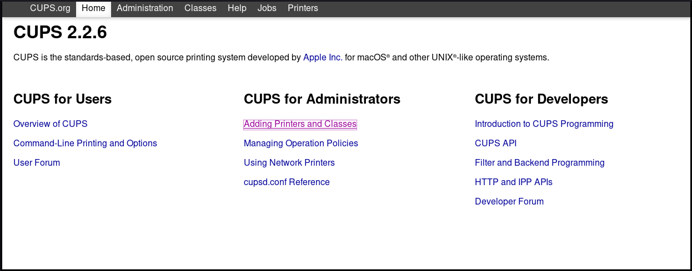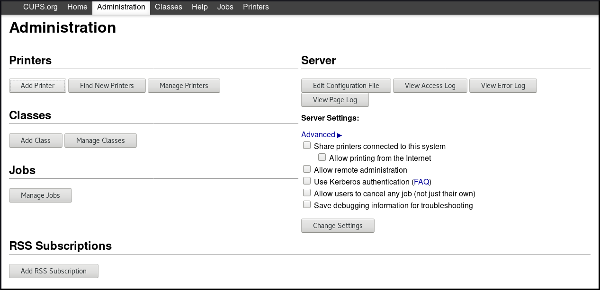Authenticate by username and password:
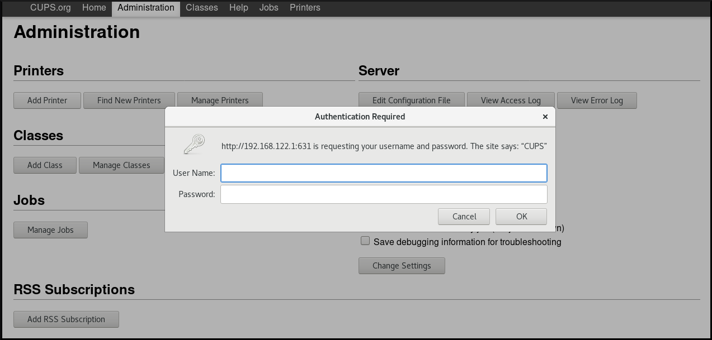ImportantTo be able to add a new printer by using the CUPS web UI, you must authenticate as one of the following users:
- Superuser
-
Any user with the administration access provided by the
sudocommand (users listed within/etc/sudoers) -
Any user belonging to the
printadmingroup in/etc/group
If a local printer is connected, or CUPS finds a network printer available, select the printer. If neither local printer nor network printer is available, select one of the printer types from
Other Network Printers, for example APP Socket/HP Jet direct, enter the IP address of the printer, and then clickContinue.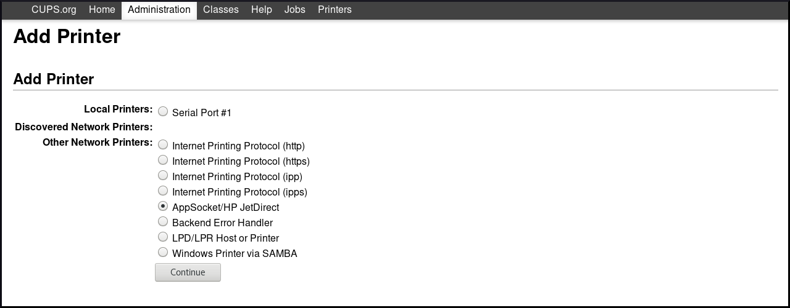If you have selected for example APP Socket/HP Jet direct as shown above, enter the IP address of the printer, and then click
Continue.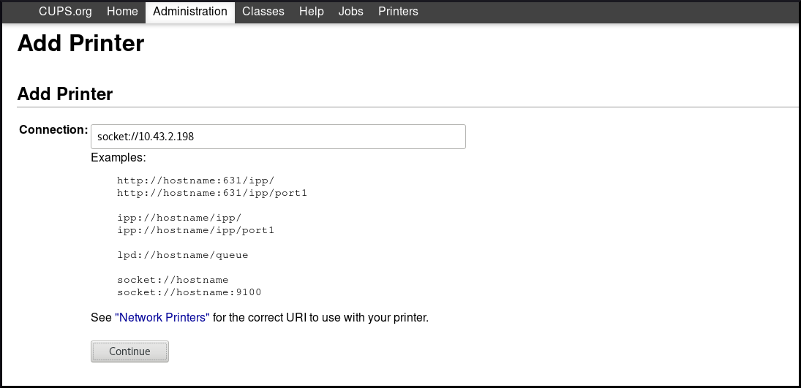You can add more details about the new printer, such as the name, description and location. To set a printer to be shared over the network, use
Share This Printeras shown below.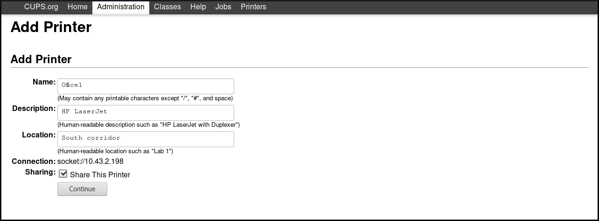Select the printer manufacturer, and then click
Continue.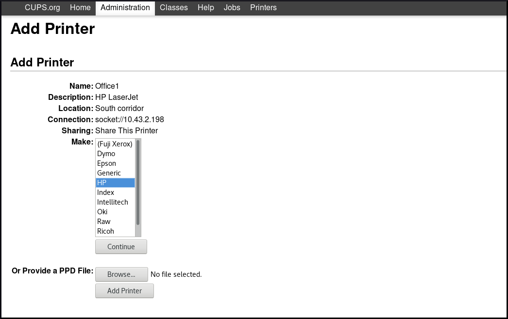Alternatively, you can also provide a postscript printer description (PPD) file to be used as a driver for the printer, by click on
Browse…at the bottom.Select the model of the printer, and then click
Add Printer.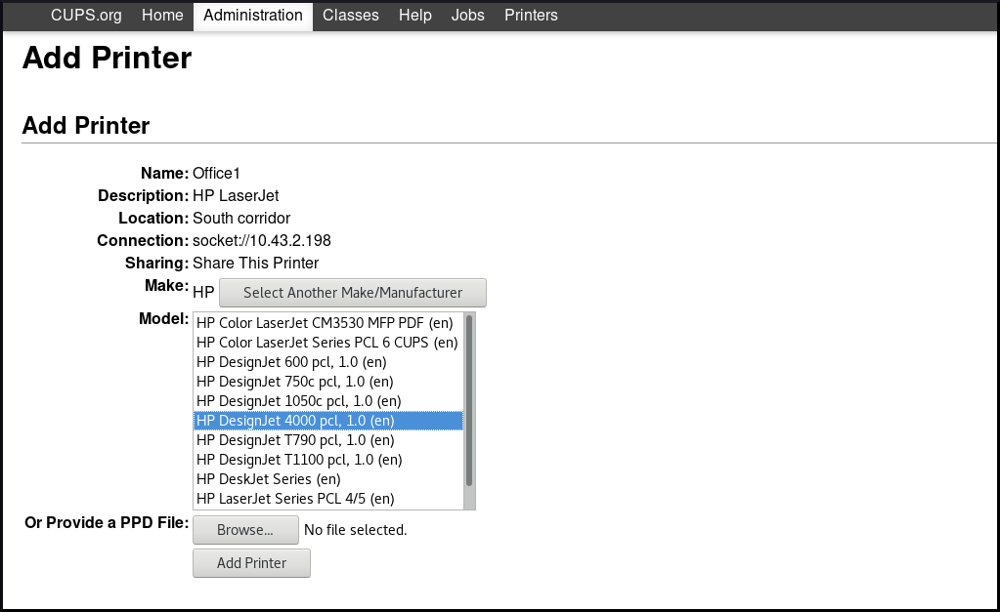After the printer has been added, the next window allows you to set the default print options.
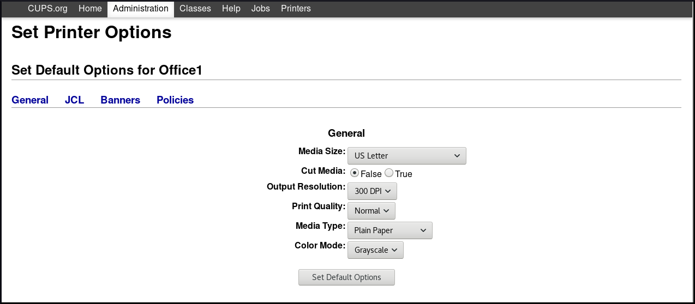
After clicking Set Default Options, you will receive a confirmation that the new printer has been added successfully.
8.5. Configuring a printer in the CUPS web UI
This section describes how to configure a new printer, and how to maintain a configuration of a printer using the CUPS web UI.
Prerequisites
You have acquired administration access to the CUPS web UI as described in Section 8.3.1, “Acquiring administration access to the CUPS web UI”.
Procedure
Click the
Printersmenu to see available printers that you can configure.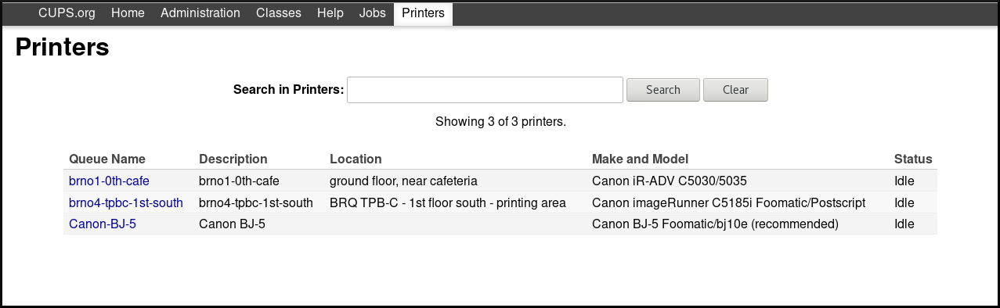Choose one printer that you want to configure.
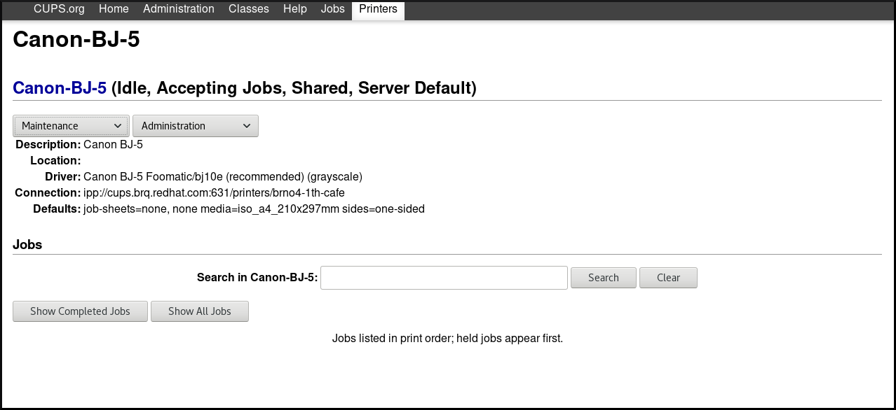Perform your selected task by using one of the available menus:
Go to
Maintenancefor maintenance tasks.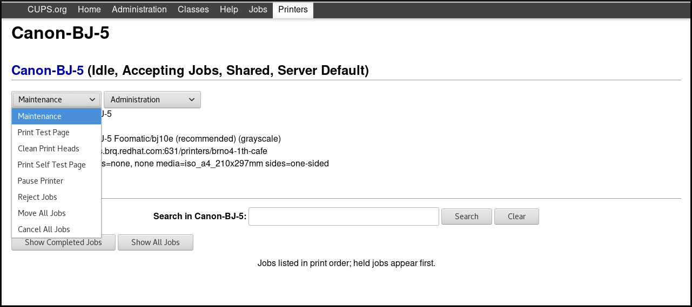Go to
Administrationfor administration tasks.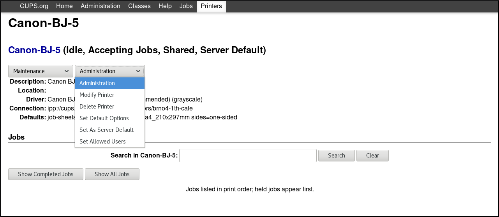-
You can also check completed print jobs or all active print jobs by clicking the
Show Completed JobsorShow All Jobsbuttons.
8.6. Printing a test page using the CUPS web UI
This section describes how to print a test page to make sure that the printer functions properly.
You might want to print a test page if one of the below conditions is met.
- A printer has been set up.
- A printer configuration has been changed.
Prerequisites
You have acquired administration access to the CUPS web UI as described in Section 8.3.1, “Acquiring administration access to the CUPS web UI”.
Procedure
Go to
Printersmenu, and clickMaintenance→Print Test Page.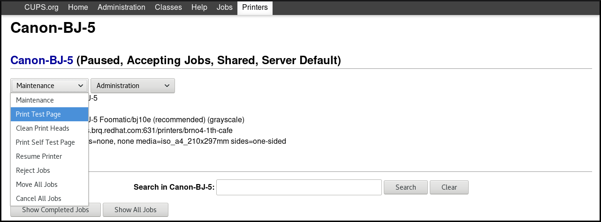
8.7. Setting print options using the CUPS web UI
This section describes how to set common print options, such as the media size and type, print quality or the color mode, in the CUPS web UI.
Prerequisites
You have acquired administration access to the CUPS web UI as described in Section 8.3.1, “Acquiring administration access to the CUPS web UI”.
Procedure
Go to
Administrationmenu, and clickMaintenance→Set Default Options.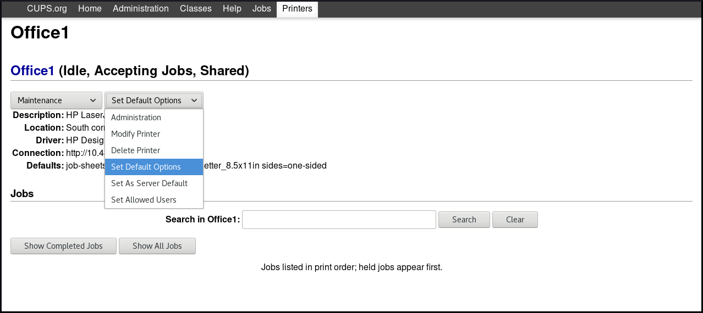Set the print options.
8.8. Using Samba to print to a Windows print server with Kerberos authentication
With the samba-krb5-printing wrapper, Active Directory (AD) users who are logged in to Red Hat Enterprise Linux can authenticate to Active Directory (AD) by using Kerberos and then print to a local CUPS print server that forwards the print job to a Windows print server.
The benefit of this configuration is that the administrator of CUPS on Red Hat Enterprise Linux does not need to store a fixed user name and password in the configuration. CUPS authenticates to AD with the Kerberos ticket of the user that sends the print job.
This section describes how to configure CUPS for this scenario.
Red Hat only supports submitting print jobs to CUPS from your local system, and not to re-share a printer on a Samba print server.
Prerequisites
- The printer that you want to add to the local CUPS instance is shared on an AD print server.
- You joined the Red Hat Enterprise Linux host as a member to the AD. For details, see Section 2.5.1, “Joining Samba to a Domain”.
-
CUPS is installed on Red Hat Enterprise Linux and the
cupsservice is running. For details, see Section 8.1, “Activating the cups service”. -
The PostScript Printer Description (PPD) file for the printer is stored in the
/usr/share/cups/model/directory.
Procedure
Install the
samba-krb5-printing,samba-client, andkrb5-workstationpackages:# yum install samba-krb5-printing samba-client krb5-workstation
Optional: Authenticate as a domain administrator and display the list of printers that are shared on the Windows print server:
# kinit administrator@AD_KERBEROS_REALM # smbclient -L win_print_srv.ad.example.com -k Sharename Type Comment --------- ---- ------- ... Example Printer Example ...
Optional: Display the list of CUPS models to identify the PPD name of your printer:
lpinfo -m ... samsung.ppd Samsung M267x 287x Series PXL ...You require the name of the PPD file when you add the printer in the next step.
Add the printer to CUPS:
# lpadmin -p "example_printer" -v smb://win_print_srv.ad.example.com/Example -m samsung.ppd -o auth-info-required=negotiate -E
The command uses the following options:
-
-p printer_namesets the name of the printer in CUPS. -
-v URI_to_Windows_printersets the URI to the Windows printer. Use the following format:smb://host_name/printer_share_name. -
-m PPD_filesets the PPD file the printer uses. -
-o auth-info-required=negotiateconfigures CUPS to use Kerberos authentication when it forwards print jobs to the remote server. -
-Eenables the printer and CUPS accepts jobs for the printer.
-
Verification steps
- Log into the Red Hat Enterprise Linux host as an AD domain user.
Authenticate as an AD domain user:
# kinit domain_user_name@AD_KERBEROS_REALM
Print a file to the printer you added to the local CUPS print server:
# lp -d example_printer file
8.9. Working with CUPS logs
8.9.1. Types of CUPS logs
CUPS provides three different kinds of logs:
- Error log - Stores error messages, warnings and debugging messages.
- Access log - Stores messages about how many times CUPS clients and web UI have been accessed.
- Page log - Stores messages about the total number of pages printed for each print job.
In Red Hat Enterprise Linux 8, all three types are logged centrally in systemd-journald together with logs from other programs.
In Red Hat Enterprise Linux 8, the logs are no longer stored in specific files within the /var/log/cups directory, which was used in Red Hat Enterprise Linux 7.
8.9.2. Accessing CUPS logs
This section describes how to access:
- All CUPS logs
- CUPS logs for a specific print job
- CUPS logs within a specific time frame
8.9.2.1. Accessing all CUPS logs
Procedure
- Filter CUPS logs from systemd-journald:
$ journalctl -u cups
8.9.2.2. Accessing CUPS logs for a specific print job
Procedure
- Filter logs for a specific print job:
$ journalctl -u cups JID=N
Where N is a number of a print job.
8.9.2.3. Accessing CUPS logs by specific time frame
Procedure
- Filter logs within the specified time frame:
$ journalctl -u cups --since=YYYY-MM-DD --until=YYYY-MM-DD
Where YYYY is year, MM is month and DD is day.
8.9.3. Configuring the CUPS log location
This section describes how to configure the location of CUPS logs.
In Red Hat Enterprise Linux 8, CUPS logs are by default logged into systemd-journald, which is ensured by the following default setting in the /etc/cups/cups-files.conf file:
ErrorLog syslog
Red Hat recommends to keep the default location of CUPS logs.
If you want to send the logs into a different location, you need to change the settings in the /etc/cups/cups-files.conf file as follows:
ErrorLog <your_required_location>
If you change the default location of CUPS log, you may experience an unexpected behavior or SELinux issues.
context: configuring-printing
context: Deploying-different-types-of-servers